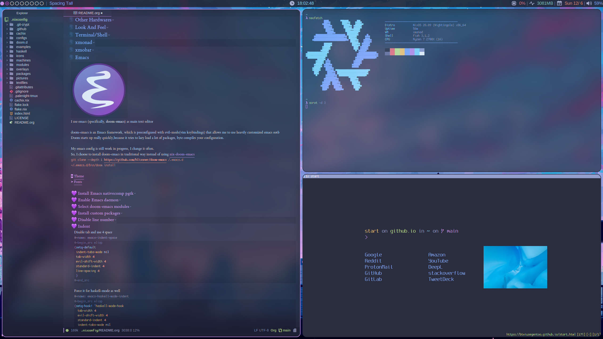

My NixOS configuration
Table of Contents
- 1.
[1/8]TODOs- 1.1. TODO Document xmobar
- 1.2. TODO Document custom packages
- 1.3. TODO Document configuration.nix/home.nix
- 1.4. TODO Document emacs-anywhere
- 1.5. TODO Document neovim and coc-settings.json
- 1.6. TODO Document flashfocus
- 1.7. TODO Document vifm
- 1.8. DONE Nigthly neovim doesn’t build. Maybe just switch to available overlay
- 2. Flake
- 3. Nix
- 4. Overlays
- 5. Input
- 6. Output
- 7. Other Hardwares
- 8. Look And Feel
- 8.1. Color Scheme/Themes
- 8.1.1. Color palette preview
- 8.1.2. TTY Colors
- 8.1.3. Emacs theme
- 8.1.4. Alacritty Colors
- 8.1.5. xmonad prompt color
- 8.1.6. LightDM Colors
- 8.1.7. Notification Colors
- 8.1.8. qutebrowser Colors
- 8.1.9. mpv background color
- 8.1.10. zathura colors
- 8.1.11. bat theme
- 8.1.12. fzf colors
- 8.1.13. fish shell colors
- 8.1.14. tmux colors
- 8.2. Fonts
- 8.2.1. Enable fontconfig
- 8.2.2. Default fonts
- 8.2.3. Allow bitmaps
- 8.2.4. Use embedded bitmaps
- 8.2.5. Enable Font Dir
- 8.2.6. Enable ghost script fonts
- 8.2.7. TTY Font
- 8.2.8. Emacs fonts
- 8.2.9. xmonad prompt fonts
- 8.2.10. Alacritty Fonts
- 8.2.11. qutebrowser Fonts
- 8.2.12. fontconfig
- 8.2.13. Dunst(Notifications) font
- 8.3. Wallpapers
- 8.4. Icons
- 8.5. Cursors
- 8.6. Opacity
- 8.7. Border
- 8.1. Color Scheme/Themes
- 9. Terminal/Shell
- 10. xmonad
- 10.1. Install xmonad/ Set config file path
- 10.2. imports
- 10.3. Workspaces
- 10.4. xmonad prompt
- 10.5. Set default terminal
- 10.6. Set gaps
- 10.7. Keybindings
- 10.8. Layouts
- 10.9. Startups(autostart)
- 10.10. Scratchpads
- 10.11. ManageHook
- 10.12. Mouse
- 10.13. Function to get active layout description
- 10.14. xmonad.hs base code
- 11. xmobar
- 12. Emacs
- 12.1. Install Emacs nativecomp pgtk
- 12.2. Enable Emacs daemon
- 12.3. Select doom-emacs modules
- 12.3.1. base code
- 12.3.2. input modules
- 12.3.3. completion modules
- 12.3.4. UI modules
- 12.3.5. editor modules
- 12.3.6. emacs modules
- 12.3.7. term modules
- 12.3.8. checkers modules
- 12.3.9. tools modules
- 12.3.10. OS modules
- 12.3.11. lang modules
- 12.3.12. email modules
- 12.3.13. app modules
- 12.3.14. config modules
- 12.4. Install custom packages
- 12.5. Disable line number
- 12.6. Indent
- 12.7. History length
- 12.8. Enable auto saving
- 12.9. Delete files to trash
- 12.10. Stretch cursor
- 12.11. Centaur Tabs
- 12.12. Modeline
- 12.13. Treemacs
- 12.14. Dashboard
- 12.15. Company auto completion/LSP
- 12.16. Projectile
- 12.17. Magit
- 12.18. Dired
- 12.19. org-mode
- 12.19.1. Set org-mode directory
- 12.19.2. Start every org-mode files folded.
- 12.19.3. Start every org-mode files with inline images
- 12.19.4. Enable variable pitch font in org-mode using mixed-pitch-mode
- 12.19.5. Set org-mode headline bullets characters.
- 12.19.6. Hide markup elements(bold, italic)
- 12.19.7. Increase headline font sizes according to level
- 12.19.8. Set org-mode folding symbol(ellipsis) to triangle
- 12.19.9. Set margins for org-mode
- 12.20. Evil-mode
- 12.21. Avy
- 12.22. Rainbow mode
- 12.23. Haskell mode
- 12.24. Twittering mode
- 12.25. Performance (optimize, remove the clutter)
- 12.26. emacs.nix base code
- 12.27. doom-emacs config.el base code
- 13. neovim
- 14. Dev environment
- 15. Web Browser
- 16. Multimedia
- 17. Games
- 18. Security
- 19. Common configs
- 20. Services
- 21. Machines
- 22. Symlinks
- 23. Misc
- 24. Credits

This is my repo that contains my configuration files for my machines (aka dotfiles) This repository contains configuration for three hosts currently
- Ryzen desktop
- My portable laptop
- My server
All hosts runs NixOS and it’s managed by Nix Flakes. home-manager is used to manage user environment. I try to install programs/services in user level as much as possible. I use xmonad as window manager for Desktop and Laptop, while server is headless.
Prequisites
| NixOS | Requires a NixOS environment to install Download live environment here |
| Nix flakes | Requires nix flakes to install this config Enable flakes |
| Emacs | Emacs is optional, required to generate files from this document |
To generate actual files, open this file in emacs and execute M-x org-babel-tangle, binded to C-c C-v t
You can install this config in NixOS running nixos-rebuild switch --flake at repository root.
You can also use cmake to make things easier
| make | Executes the same command as make build |
| make build | Generate files from this document using emacs |
| make install | Install this config based on hostname |
| make desktop1 | Install Desktop configs |
| make laptop1 | Install laptop configs |
| make server1 | Install server configs |
You can use SPC m . in doom-emacs to navigate headlines faster.
If you just want to navigate my config,
Please don’t use GitHub preview. Open this file in emacs, or just go here from browser (generated HTML file).
I keep in sync a HTML file based on this document, thanks to https://github.com/fniessen/org-html-themes
It’s much easier to read than GitHub preview.
All files generated from README.org except configuration.nix(s) are read-only. Made an exception for configuration.nix(s) because NixOS reinstall requires to edit Partition UUID.
1 [1/8]TODOs
1.1 TODO Document xmobar
1.2 TODO Document custom packages
1.3 TODO Document configuration.nix/home.nix
1.4 TODO Document emacs-anywhere
1.5 TODO Document neovim and coc-settings.json
1.6 TODO Document flashfocus
1.7 TODO Document vifm
1.8 DONE Nigthly neovim doesn’t build. Maybe just switch to available overlay
2 Flake
A flake is (usually) a Git repository that contains a file named flake.nix at root.
This repository is compatible with nix flakes.
The following code is the base code of flake.nix file.
# This file is generated from "README.org" { description = "NixOS configuration for all machines"; <<flake-inputs>> outputs = inputs@{ self, home-manager, nur, nixpkgs, ... }: let inherit (builtins) listToAttrs attrValues attrNames readDir; inherit (nixpkgs) lib; inherit (lib) removeSuffix; <<nixpkgs-config>> <<flake-defaults>> in { <<flake-overlays>> nixosConfigurations = { <<desktop1>> <<laptop1>> <<server1>> }; }; }
2.1 Flake inputs
Flakes provides a better approach than channel to manage nixpkgs and overlays.
It’s called inputs.
Channels aren’t pinned in the config. When updating nixpkgs, you have to run this command nix-channel --update locally everytime.
Therefore, nixpkgs revision differs from machine to machine, making not fully reproducible.
Using nix flakes, All inputs are automatically pinned at specific revision in flake.lock file at repository root to guarantee reproducibility.
This can also be achieved by manually pinning nixpkgs at specific revision using overlays.
But flakes does it automatically, without having to update rev and sha256 manually everytime.
You can update inputs easily like this: nix flake --update-input nixpkgs
inputs = { home-manager = { url = "github:rycee/home-manager/release-20.09"; inputs = { nixpkgs.follows = "nixpkgs"; }; }; nur.url = "github:nix-community/NUR"; emacs-overlay.url = "github:nix-community/emacs-overlay"; neovim-overlay.url = "github:nix-community/neovim-nightly-overlay"; nixpkgs.url = "github:nixos/nixpkgs/nixos-20.09"; unstable.url = "github:nixos/nixpkgs/nixos-unstable"; master.url = "github:nixos/nixpkgs/master"; };
2.2 default imports
Import default modules
defaults = { pkgs, ... }: { imports = [ ./cachix.nix ./modules/common/nix.nix ./modules/common/doas.nix ./modules/common/console.nix ./modules/hardware/bluetooth.nix ./modules/hardware/zram.nix ./modules/hardware/earlyoom.nix ./modules/common/etcfiles.nix ./modules/common/systempackages.nix ./modules/common/globallocale.nix ./modules/services/pulseaudio.nix ./modules/services/clamav.nix ./modules/services/openssh.nix ]; };
2.3 X11 imports
List default modules that requires X11 here
./modules/common/fonts.nix ./modules/gui/blueman.nix
2.4 home-manager imports
List default modules for home-manager that doesn’t require X11 here
./modules/terminal/fish.nix ./modules/terminal/git.nix ./modules/terminal/bat.nix ./modules/terminal/fzf.nix ./modules/terminal/lsd.nix ./modules/terminal/starship.nix ./modules/terminal/tmux.nix ./modules/services/gpg.nix
2.5 home-manager X11 imports
List default modules for home-manager that requires X11 here
./modules/common/xdg.nix ./modules/common/xmonad.nix ./modules/services/dunst.nix ./modules/services/picom.nix ./modules/terminal/alacritty.nix ./modules/gui/qutebrowser.nix ./modules/gui/firefox.nix ./modules/gui/mpv.nix ./modules/gui/zathura.nix ./modules/editors/emacs.nix
2.6 nixpkgs config
This configuration is for default nixpkgs. Set system arch to x8664, Allow installation for non-free software(also known as proprietary software), and import overlays from
pkgs = (import nixpkgs) { system = "x86_64-linux"; config = { allowUnfree = true; <<retroarch-cores>> }; overlays = attrValues self.overlays; };
2.7 import overlays
This code searchs ./overlays directory for nix files and automatically imports the files.
NUR, nixos-unstable, nixpkgs master are imported as package set of pkgs here. Packages from these package sets can be referred like pkgs.unstable.fish pkgs.master.discord pkgs.nur.repos.rycee.firefox-addons
This have a benefit than just importing the same way as pkgs like {pkgs, unstable, master, ... }:. If you import unstable just like pkgs, idk why, but it can’t be imported from overlays.
So it can’t be used to override packages of home-manager modules.
Importing as package set makes it possible and it’s more convenient.
overlays = let overlayFiles = listToAttrs (map (name: { name = removeSuffix ".nix" name; value = import (./overlays + "/${name}"); }) (attrNames (readDir ./overlays))); in overlayFiles // { nur = final: prev: { nur = import inputs.nur { nurpkgs = final; pkgs = final; }; }; emacs-overlay = inputs.emacs-overlay.overlay; neovim-overlay = inputs.neovim-overlay.overlay; unstable = final: prev: { unstable = import inputs.unstable { system = final.system; config.allowUnfree = true; }; }; master = final: prev: { master = import inputs.master { system = final.system; config.allowUnfree = true; }; }; };
2.8 Machines
These are the codes that evaluates a NixOS configuration for tools like nixos-rebuild for each machines.
It imports modules (that contains configuration for) for each machines.
2.8.1 Desktop
desktop1 = nixpkgs.lib.nixosSystem { system = "x86_64-linux"; modules = [ defaults ./machines/maindesktop/configuration.nix ./modules/common/xserver.nix ./modules/hardware/ssd.nix <<x11-defaults>> home-manager.nixosModules.home-manager ({ home-manager.useGlobalPkgs = true; home-manager.useUserPackages = true; home-manager.users.btw = { ... }: { imports = [ ./machines/maindesktop/home.nix <<home-manager-x11-defaults>> <<home-manager-defaults>> ]; }; }) ]; inherit pkgs; };
2.8.2 Laptop
laptop1 = nixpkgs.lib.nixosSystem { system = "x86_64-linux"; modules = [ defaults ./machines/mainlaptop/configuration.nix ./modules/common/xserverlaptop.nix ./modules/hardware/ssd.nix ./modules/hardware/tlp.nix ./modules/hardware/thinkfan.nix ./modules/hardware/libinput.nix <<x11-defaults>> home-manager.nixosModules.home-manager ({ home-manager.useGlobalPkgs = true; home-manager.useUserPackages = true; home-manager.users.x230 = { ... }: { imports = [ ./machines/mainlaptop/home.nix <<home-manager-x11-defaults>> <<home-manager-defaults>> ]; }; }) ]; inherit pkgs; };
2.8.3 Server
server1 = nixpkgs.lib.nixosSystem { system = "x86_64-linux"; modules = [ defaults ./machines/mainserver/configuration.nix home-manager.nixosModules.home-manager ({ home-manager.useGlobalPkgs = true; home-manager.useUserPackages = true; home-manager.users.hac = { ... }: { imports = [ ./machines/mainserver/home.nix <<home-manager-defaults>> ]; }; }) ]; inherit pkgs; };
3 Nix
Configure Nix package manager
# This file is generated from "README.org" { pkgs, ... }: { <<nix-package>> nix.extraOptions = '' <<nix-enable-flakes>> builders-use-substitutes = true ''; <<nix-allowed-users>> <<nix-trusted-users>> }
3.1 Enable flakes
Select Nix package that contains flakes
nix.package = pkgs.nixFlakes;
Enable nix flakes(flakes is still a experimental feature.)
experimental-features = nix-command flakes
3.2 Allowed users
A list of names of users that are allowed to connect to the Nix daemon.
nix.allowedUsers = [ "@wheel" ];
3.3 Trusted users
A list of names of users that have additional rights when connecting to the Nix daemon.
Add user here to use cachix and run nixos-rebuild from that user.
nix.trustedUsers = [ "root" "@wheel" ];
3.4 Enable lorri
lorri is a nix-shell replacement with fast direnv integration
services.lorri.enable = true;
3.5 Integrate lorri direnv with fish shell
For direnv to work properly it needs to be hooked into the shell. Once the hook is configured, restart your shell for direnv to be activated.
eval (direnv hook fish)
4 Overlays
4.1 Overrides
override nixpkgs packages. useful for home-manager modules.
# This file is generated from "README.org" final: prev: { inherit (final.unstable) lua; inherit (final.unstable) fish; inherit (final.master) youtube-dl; inherit (final.master) mpv; inherit (final.unstable) fzf; }
4.2 Custom packages
Import custom packages into nixpkgs, so you can treat just like any other package.
# This file is generated from "README.org" final: prev: rec { apple-color-emoji = prev.callPackage ../packages/apple-color-emoji { }; tamzen-nerdfont = prev.callPackage ../packages/tamzen-nerdfont { }; palenight-gtk-theme = prev.callPackage ../packages/palenight-gtk-theme { }; vifmimg = prev.callPackage ../packages/vifmimg { }; }
4.3 Attribute overrides
4.3.1 neofetch
Install latest neofetch with new NixOS logo
# This file is generated from "README.org" final: prev: { neofetch = prev.neofetch.overrideAttrs (old: rec { version = "unstable-2020-11-02"; src = prev.fetchFromGitHub { owner = "dylanaraps"; repo = "neofetch"; rev = "5dfce0f9c3068d4d8a49d0b7182bdace61b8f4d0"; sha256 = "131r07wllkvrcgw0ndyf5avqpzqkym56ii0qck6qyjfa8ylx6s31"; }; }); }
5 Input
5.1 Keyboard
5.1.1 Xorg repeat rate
Default repeat rate is too slow. Change it
services.xserver.autoRepeatDelay = 200; services.xserver.autoRepeatInterval = 25;
5.1.2 Dvorak
I use Dvorak layout on HHKB. Dvorak layout is a ergonomic alternative for qwerty layout that requires less movement. My keybinds are configured with HHKB Dvorak usage in mind. I didn’t remapped vim(or evil-mode) keys(hjkl) because it already feels natural as is.
Console config
console.keyMap = "dvorak";
Xorg config
services.xserver.layout = "us"; services.xserver.xkbVariant = "dvorak";
home-manager config
home.keyboard = { layout = "us"; variant = "dvorak"; };
5.1.3 IME
Install Japanese IME
i18n.inputMethod.enabled = "fcitx"; i18n.inputMethod.fcitx.engines = with pkgs.fcitx-engines; [ mozc ];
5.1.4 Thinkpad
I can’t live without HHKB-ish layout. I remap my ThinkPad layout:
xkb_keymap { xkb_keycodes { include "evdev+aliases(qwerty)" <ESC> = 49; <BKSP> = 51; <LCTL> = 37; <TLDE> = 9; <BKSL> = 22; }; xkb_types { include "complete"}; xkb_compatibility { include "complete"}; xkb_symbols { include "pc+us(dvorak)+us(dvorak):2+inet(evdev)+altwin(swap_alt_win)+ctrl(nocaps)" }; xkb_geometry { include "pc(pc104)"}; };
Symlink it to /etc for convenience
environment.etc."thinkpadlayout.xkb".source = ../../configs/thinkpadlayout.xkb;
Make a systemd service to execute everytime after waking up from restart/sleep
systemd.user.services.xkb-restore = { description = "Restore keyboard layout after suspend"; after = [ "suspend.target" "graphical-session.target" ]; serviceConfig = { Type = "simple"; Environment = "DISPLAY=:0"; ExecStartPre = "/usr/bin/env sleep 3"; ExecStart = "${pkgs.bash}/bin/bash -c \"${pkgs.xorg.xkbcomp}/bin/xkbcomp -i $(${pkgs.xorg.xinput}/bin/xinput list | sed -n 's/.*Translated.*id=\\\([0-9]*\\\).*keyboard.*/\\\1/p') /etc/thinkpadlayout.xkb :0\""; }; wantedBy = [ "suspend.target" "graphical-session.target" ]; };
5.2 Trackpad
I use libinput because the better palm detection. It’s a minimal config because trackpad is mostly disabled.
# This file is generated from "README.org" { services.xserver.libinput.enable = true; services.xserver.libinput.naturalScrolling = true; services.xserver.libinput.disableWhileTyping = true; services.xserver.libinput.accelSpeed = "1.000000"; }
5.3 keynav
keynav is a program that allows you to control the mouse with keyboard in a very efficient way. One of the big reasons I can live mostly without mouse
services.keynav.enable = true;
Generate keynav config. Super-semicolon to start keynav s to warp cursor m,w,v,z to scroll, think like hjkl on QWERTY keyboard. it’s positioned on bottom right of Dvorak layout
"keynav/keynavrc".text = '' super+semicolon start s warp m click 6 w click 5 v click 4 z click 7 '';
6 Output
6.1 Monitor
6.1.1 Brightness
We need these kernel parameters to be able to control display brightness on ThinkPad
"acpi_osi='!Windows 2012'" "acpi_backlight=vendor"
6.1.2 Resolution
Scale desktop monitor to 1440p
xsession.profileExtra = "xrandr --output DVI-D-0 --scale-from 2560x1440 --panning 2560x1440";
Scale laptop monitor to 1080p
xsession.profileExtra = "xrandr --output LVDS1 --scale-from 1920x1080 --panning 1920x1080";
6.2 Sound
6.2.1 Enable sound
Enable ALSA sound in configuration.nix
sound.enable = true;
6.2.2 PulseAudio
PulseAudio is a general purpose sound server intended to run as a middleware between your applications and your hardware devices, either using ALSA or OSS. It’s required by many programs to play sound nowadays.
# This file is generated from "README.org" { pkgs, ... }: { <<pulseaudio-enable>> <<pulseaudio-package>> <<pulseaudio-support-32bit>> <<pulseaudio-extramodules>> <<pulseaudio-daemon-config>> }
- Enable PulseAudio
Whether to enable the PulseAudio sound server.
hardware.pulseaudio.enable = true;
- PulseAudio 32bit support
Include 32-bit pulseaudio libraries in the system. It’s needed by certain programs(like wine 32bit, mainly used for games)
hardware.pulseaudio.support32Bit = true;
- PulseAudio package
Select the PulseAudio derivation to use. This can be used to enable features (such as JACK support, Bluetooth) via the pulseaudioFull package
hardware.pulseaudio.package = pkgs.pulseaudioFull; - PulseAudio extra modules
Extra PulseAudio modules to use. This is intended for out-of-tree pulseaudio modules like extra bluetooth codecs.
hardware.pulseaudio.extraModules = [ pkgs.pulseaudio-modules-bt ]; - PulseAudio daemon config
idk, this config is supposed to improve audio quality
hardware.pulseaudio.daemon.config = { default-sample-rate = "48000"; alternate-sample-rate = "44100"; default-sample-channels = "2"; default-channel-map = "front-left,front-right"; default-fragments = "2"; default-fragment-size-msec = "125"; enable-lfe-remixing = "no"; high-priority = "yes"; nice-level = "-11"; realtime-scheduling = "yes"; realtime-priority = "9"; rlimit-rtprio = "9"; resample-method = "soxr-vhq"; daemonize = "no"; default-sample-format = "float32le"; };
7 Other Hardwares
7.1 Bluetooth
This module configures bluetooth for all machines.
# This file is generated from "README.org" { pkgs, ... }: { <<bluetooth-enable>> <<bluetooth-package>> <<bluetooth-config>> }
7.1.1 Enable Bluetooth
hardware.bluetooth.enable = true;
7.1.2 Bluetooth package
bluezFull enables all bluez plugins. It’s needed for many devices.
hardware.bluetooth.package = pkgs.bluezFull;
7.1.3 Bluetooth config
Setting controller mode to "bredr" (disabling Bluetooth LE) is a workaround to fix airpods.
hardware.bluetooth.config = { General = { ControllerMode = "bredr"; }; };
7.1.4 Enable blueman
Blueman is a bluetooth manager written in GTK
# This file is generated from "README.org" { services.blueman.enable = true; }
7.2 TLP
TLP is a feature-rich command line utility for Linux, saving laptop battery power without the need to delve deeper into technical details.
# This file is generated from "README.org" { <<tlp-enable>> <<tlp-settings>> }
7.2.1 Enable TLP
services.tlp.enable = true;
7.2.2 TLP settings
services.tlp.settings = { "SOUND_POWER_SAVE_ON_AC" = 0; "SOUND_POWER_SAVE_ON_BAT" = 1; "SOUND_POWER_SAVE_CONTROLLER" = "Y"; "BAY_POWEROFF_ON_AC" = 0; "BAY_POWEROFF_ON_BAT" = 1; "DISK_APM_LEVEL_ON_AC" = "254 254"; "DISK_APM_LEVEL_ON_BAT" = "128 128"; "DISK_IOSCHED" = "none none"; "SATA_LINKPWR_ON_AC" = "med_power_with_dipm max_performance"; "SATA_LINKPWR_ON_BAT" = "min_power"; "MAX_LOST_WORK_SECS_ON_AC" = 15; "MAX_LOST_WORK_SECS_ON_BAT" = 60; "NMI_WATCHDOG" = 0; "WIFI_PWR_ON_AC" = "off"; "WIFI_PWR_ON_BAT" = "on"; "WOL_DISABLE" = "Y"; "CPU_SCALING_GOVERNOR_ON_AC" = "powersave"; "CPU_SCALING_GOVERNOR_ON_BAT" = "powersave"; "CPU_MIN_PERF_ON_AC" = 0; "CPU_MAX_PERF_ON_AC" = 100; "CPU_MIN_PERF_ON_BAT" = 0; "CPU_MAX_PERF_ON_BAT" = 50; "CPU_BOOST_ON_AC" = 1; "CPU_BOOST_ON_BAT" = 1; "SCHED_POWERSAVE_ON_AC" = 0; "SCHED_POWERSAVE_ON_BAT" = 1; "ENERGY_PERF_POLICY_ON_AC" = "performance"; "ENERGY_PERF_POLICY_ON_BAT" = "power"; "RESTORE_DEVICE_STATE_ON_STARTUP" = 0; "RUNTIME_PM_ON_AC" = "on"; "RUNTIME_PM_ON_BAT" = "auto"; "PCIE_ASPM_ON_AC" = "default"; "PCIE_ASPM_ON_BAT" = "powersupersave"; "USB_AUTOSUSPEND" = 1; };
7.3 Thinkfan
Thinkfan is a simple, lightweight fan controler for IBM/Lenovo ThinkPads
# This file is generated from "README.org" { <<thinkfan-enable>> <<thinkfan-fan>> <<thinkfan-sensors>> <<thinkfan-levels>> }
7.3.1 Enable Thinkfan
services.thinkfan.enable = true;
7.3.2 Select Fan
Specify the fan to use.
services.thinkfan.fan = "tp_fan /proc/acpi/ibm/fan";
7.3.3 Select sensors
thinkfan can read temperatures from three possible sources:
/proc/acpi/ibm/thermal which is provided by thinkpadacpi kernel module
/sys/class/humon/*/temp*_input which may be provided by any humon drivers
S.M.A.R.T. which reads the temperature directly from the hard drive using libatasmart
services.thinkfan.sensors = '' hwmon /sys/class/thermal/thermal_zone0/temp '';
7.3.4 Levels
Configure fan speed
services.thinkfan.levels = '' (0, 0, 42) (1, 40, 47) (2, 45, 52) (3, 50, 57) (4, 55, 62) (5, 60, 72) (6, 65, 77) (7, 70, 80) (127, 75, 32767) '';
7.4 ZRAM
ZRAM is a linux kernel module that creates in-memory compressed devices and swap space. Literally download more RAM
# This file is generated from "README.org" { <<zram-enable>> <<zram-algorithm>> <<zram-memory-percent>> }
7.4.1 Enable ZRAM
zramSwap.enable = true;
7.4.2 ZRAM algorithm
Compression algorithm. lzo has good compression, but is slow. lz4 has bad compression, but is fast. zstd is both good compression and fast, but requires newer kernel.
zramSwap.algorithm = "zstd";
7.4.3 ZRAM memory percent
Maximum amount of memory that can be used by the zram swap devices. Defaults to 1/2 of total RAM.
zramSwap.memoryPercent = 100;
7.5 SSD
Enable SSD trim and set better filesystem mounting options Make sure to only import for SSD devices.
# This file is generated from "README.org" { services.fstrim.enable = true; fileSystems."/".options = [ "noatime" "nodiratime" "discard" ]; }
7.6 Early oom
Enable early out of memory killing This is useful to prevent hang for example, when compiling
# This file is generated from "README.org" { services.earlyoom.enable = true; }
8 Look And Feel
8.1 Color Scheme/Themes
I use material-palenight as colorscheme for everything from editor to browser.
8.1.1 Color palette preview
 Color palette picture taken from here
Color palette picture taken from here
8.1.2 TTY Colors
The 16 colors palette used by TTY. Leave empty to use the default colors. Colors must be in hexademical format and listed in order from color 0 to color 15.
console.colors = [ "434759" "f07178" "c3e88d" "ffcb6b" "82aaff" "c792ea" "89ddff" "d0d0d0" "434758" "ff8b92" "ddffa7" "ffe585" "9cc4ff" "e1acff" "a3f7ff" "fefefe" ];
8.1.3 Emacs theme
I use doom-palenight theme from here
(setq doom-theme 'doom-palenight)
Choose colored treemacs(side bar file tree) theme
(setq doom-themes-treemacs-theme "doom-colors")
8.1.4 Alacritty Colors
Color codes taken from here
programs.alacritty.settings.colors = { # Default colors primary = { background = "0x292d3e"; foreground = "0x959dcb"; }; cursor = { text = "0x202331"; cursor = "0xc792ea"; }; # Normal colors normal = { black = "0x292d3e"; red = "0xf07178"; green = "0xc3e88d"; yellow = "0xffcb6b"; blue = "0x82aaff"; magenta = "0xc792ea"; cyan = "0x89ddff"; white = "0x959dcb"; }; # Bright colors bright = { black = "0x676e95"; red = "0xf07178"; green = "0xc3e88d"; yellow = "0xffcb6b"; blue = "0x82aaff"; magenta = "0xc792ea"; cyan = "0x89ddff"; white = "0xffffff"; }; indexed_colors = [ { index = 16; color = "0xf78c6c"; } { index = 17; color = "0xff5370"; } { index = 18; color = "0x444267"; } { index = 19; color = "0x32374d"; } { index = 20; color = "0x8796b0"; } { index = 21; color = "0x959dcb"; } ]; };
8.1.5 xmonad prompt color
Set xmonad prompt default bg/fg color, bg/fg when highlighted, and border color
, bgColor = "#232635" , fgColor = "#A6ACCD" , bgHLight = "#444267" , fgHLight = "#A6ACCD" , borderColor = "#2b2a3e"
8.1.6 LightDM Colors
Configure center dialog colors
text-color = "#A6ACCD" error-color = "#F07178" window-color = "#202331" border-color = "#202331" password-color = "#A6ACCD" password-background-color = "#202331" password-border-color = "#202331"
8.1.7 Notification Colors
services.dunst.settings.global = { frame_color = "#959DCB"; separator_color = "#959DCB"; }; services.dunst.settings.urgency_low = { background = "#444267"; foreground = "#676E95"; }; services.dunst.settings.urgency_normal = { background = "#32374D"; foreground = "#959DCB"; }; services.dunst.settings.urgency_critical = { background = "#F07178"; foreground = "#959DCB"; };
8.1.8 qutebrowser Colors
Enable darkmode
programs.qutebrowser.settings.colors.webpage.darkmode.enabled = true;
Colors from base16-qutebrowser (https://github.com/theova/base16-qutebrowser) Base16 qutebrowser template by theova Material Palenight scheme by Nate Peterson
programs.qutebrowser.settings.colors = { completion = { fg = "#959DCB"; odd.bg = "#292D3E"; even.bg = "#292D3E"; category = { fg = "#FFCB6B"; bg = "#292D3E"; border.top = "#292D3E"; border.bottom = "#292D3E"; }; item = { selected.fg = "#444267"; selected.bg = "#FFCB6B"; selected.border.top = "#FFCB6B"; selected.border.bottom = "#FFCB6B"; selected.match.fg = "#F07178"; }; match.fg = "#C3E88D"; scrollbar = { fg = "#959DCB"; bg = "#292D3E"; }; }; contextmenu = { menu = { bg = "#292D3E"; fg = "#959DCB"; }; selected = { bg = "#FFCB6B"; fg = "#444267"; }; }; downloads = { bar.bg = "#292D3E"; start = { fg = "#292D3E"; bg = "#82AAFF"; }; stop = { fg = "#292D3E"; bg = "#89DDFF"; }; error.fg = "#F07178"; }; hints = { fg = "#292D3E"; bg = "#FFCB6B"; match.fg = "#959DCB"; }; keyhint = { fg = "#959DCB"; suffix.fg = "#959DCB"; bg = "#292D3E"; }; messages = { error = { fg = "#292D3E"; bg = "#F07178"; border = "#F07178"; }; warning = { fg = "#292D3E"; bg = "#C792EA"; border = "#C792EA"; }; info = { fg = "#959DCB"; bg = "#292D3E"; border = "#292D3E"; }; }; prompts = { fg = "#959DCB"; border = "#292D3E"; bg = "#292D3E"; selected.bg = "#FFCB6B"; }; statusbar = { normal = { fg = "#C3E88D"; bg = "#292D3E"; }; insert = { fg = "#292D3E"; bg = "#82AAFF"; }; passthrough = { fg = "#292D3E"; bg = "#89DDFF"; }; private = { fg = "#292D3E"; bg = "#676E95"; }; command = { fg = "#959DCB"; bg = "#292D3E"; private = { fg = "#959DCB"; bg = "#292D3E"; }; }; caret = { fg = "#292D3E"; bg = "#C792EA"; selection = { fg = "#292D3E"; bg = "#82AAFF"; }; }; progress.bg = "#82AAFF"; url = { fg = "#959DCB"; error.fg = "#F07178"; hover.fg = "#959DCB"; success = { http.fg = "#89DDFF"; https.fg = "#C3E88D"; }; warn.fg = "#C792EA"; }; }; tabs = { bar.bg = "#292D3E"; indicator = { start = "#82AAFF"; stop = "#89DDFF"; error = "#F07178"; }; odd = { fg = "#959DCB"; bg = "#292D3E"; }; even = { fg = "#959DCB"; bg = "#292D3E"; }; pinned = { even = { bg = "#292D3E"; fg = "#959DCB"; }; odd = { bg = "#292D3E"; fg = "#959DCB"; }; selected = { even = { bg = "#292D3E"; fg = "#959DCB"; }; odd = { bg = "#292D3E"; fg = "#959DCB"; }; }; }; selected = { odd = { fg = "#FFFFFF"; bg = "#959DCB"; }; even = { fg = "#FFFFFF"; bg = "#959DCB"; }; }; }; }; # }}}
8.1.9 mpv background color
Set mpv background color, color used to draw parts of the mpv window not covered by video.
programs.mpv.config.background = "#292D3E";
8.1.10 zathura colors
Set zathura interface colors
programs.zathura.options.default-bg = "#292D3E"; programs.zathura.options.default-fg = "#A6ACCD"; programs.zathura.options.statusbar-bg = "#202331"; programs.zathura.options.statusbar-fg = "#A6ACCD"; programs.zathura.options.inputbar-bg = "#202331"; programs.zathura.options.inputbar-fg = "#A6ACCD"; programs.zathura.options.highlight-color = "#444267"; programs.zathura.options.highlight-active-color = "#82aaff";
Set colors to recolor the document
programs.zathura.options.recolor-lightcolor = "#292D3E"; programs.zathura.options.recolor-darkcolor = "#A6ACCD";
8.1.11 bat theme
Set theme name
programs.bat.config.theme = "palenight";
9.6.2 can use Sublime Text 3 themes. Download theme:
programs.bat.themes = { palenight = builtins.readFile ( pkgs.fetchgit { url = "https://github.com/equinusocio/material-theme"; rev = "614b7e8bc7369c32e852297d42253643ebf90d55"; sha256 = "1gjfisksvqa2d08na0yln7yxny4i16wrmvlfnwllbqrgwh26v94g"; } + "/schemes/Material-Theme-Palenight.tmTheme" ); };
8.1.12 fzf colors
material-palenight applied to 9.6.3
"--color=bg+:0,bg:#292D3E,spinner:#89DDFF,hl:#82AAFF,fg:#8796B0,header:#82AAFF,info:#FFCB6B,pointer:#89DDFF,marker:#89DDFF,fg+:#959DCB,prompt:#c792ea,hl+:#82AAFF"
8.1.13 fish shell colors
Set colors only if it isn’t TTY
if test "$TERM" != "linux" set -U fish_color_autosuggestion 676e95 set -U fish_color_cancel -r set -U fish_color_command green #white set -U fish_color_comment 32374D set -U fish_color_cwd green set -U fish_color_cwd_root red set -U fish_color_end brblack #blue set -U fish_color_error red set -U fish_color_escape yellow #green set -U fish_color_history_current --bold set -U fish_color_host normal set -U fish_color_match --background=brblue set -U fish_color_normal normal set -U fish_color_operator blue #green set -U fish_color_param 8796B0 set -U fish_color_quote yellow #brblack set -U fish_color_redirection cyan set -U fish_color_search_match bryellow --background=32374D set -U fish_color_selection white --bold --background=32374D set -U fish_color_status red set -U fish_color_user brgreen set -U fish_color_valid_path --underline set -U fish_pager_color_completion normal set -U fish_pager_color_description yellow --dim set -U fish_pager_color_prefix white --bold #--underline set -U fish_pager_color_progress brwhite --background=cyan end
8.1.14 tmux colors
load colorscheme file
source-file ./.palenight-tmux
8.2 Fonts
I use Cozette font as editor/terminal font.
Spleen is my choice for TTY font
GohuFont is used only to render nerdfonts.
I think Apple’s emoji font is the best emoji font.
Install fonts:
# This file is generated from "README.org" { pkgs, ... }: { fonts.fonts = with pkgs; [ (nerdfonts.override { fonts = [ "Gohu" ]; }) unstable.dejavu_fonts spleen unstable.cozette apple-color-emoji noto-fonts-cjk emacs-all-the-icons-fonts etBook liberation_ttf_v2 ]; <<system-font-config>> <<fontconfig-enable>> <<fontconfig-allowbitmaps>> <<use-embedded-bitmaps>> <<enable-font-dir>> <<enable-ghostscript-fonts>> }
8.2.1 Enable fontconfig
If enabled, a fontconfig file will be built pointing to a set of default fonts.
fonts.fontconfig.enable = true;
8.2.2 Default fonts
Set system-wide monospace/emoji font below. Note that setting emoji here is not sufficient to show emoji properly.
fonts.fontconfig = { defaultFonts = { emoji = [ "Apple Color Emoji" ]; monospace = [ "Spleen" ]; }; };
8.2.3 Allow bitmaps
This option is needed to allow usage of bitmap fonts. Like Spleen I use.
fonts.fontconfig.allowBitmaps = true;
8.2.4 Use embedded bitmaps
This option is necessary to make emacs show unicode emojis properly.
fonts.fontconfig.useEmbeddedBitmaps = true;
8.2.5 Enable Font Dir
Create a directory with links to all fonts in /run/current-system/sw/share/X11-fonts
fonts.enableFontDir = true;
8.2.6 Enable ghost script fonts
Add the fonts provided by Ghostscript to the list of system fonts.
fonts.enableGhostscriptFonts = true;
8.2.7 TTY Font
Console fonts needs to be installed here via console.packages to be able to set.
console.packages = with pkgs; [ unstable.spleen ]; console.font = "spleen-6x12";
8.2.8 Emacs fonts
Emacs fonts are set in point(pt) rather than pixel(px) Set doom fixed-pitch font and doom variable pitch font here:
(setq doom-font "CozetteVector-10.5" doom-variable-pitch-font "ETBembo-11")
Enable bold and italic
(setq doom-themes-enable-bold t)
(setq doom-themes-enable-italic t)
Set centaur-tabs tabline font
(centaur-tabs-change-fonts "Liberation Sans" 110)
Set custom set faces here modeline font dashboard font color avy hinting font. org-mode title font size
(custom-set-faces! '(mode-line :family "Liberation Sans" :height 105) '(mode-line-inactive :family "Liberation Sans" :height 105) '(doom-dashboard-menu-title :foreground "#c792ea") '(org-document-title :height 225) )
Set treemacs fonts to Liberation Sans
(setq doom-themes-treemacs-enable-variable-pitch nil) (custom-set-faces! '(treemacs-root-face :family "Liberation Sans" :height 105) '(treemacs-git-unmodified-face :family "Liberation Sans" :height 105) '(treemacs-git-modified-face :family "Liberation Sans" :height 105) '(treemacs-git-renamed-face :family "Liberation Sans" :height 105) '(treemacs-git-ignored-face :family "Liberation Sans" :height 105) '(treemacs-git-untracked-face :family "Liberation Sans" :height 105) '(treemacs-git-added-face :family "Liberation Sans" :height 105) '(treemacs-git-conflict-face :family "Liberation Sans" :height 105) '(treemacs-directory-face :family "Liberation Sans" :height 105) '(treemacs-directory-collapsed-face :family "Liberation Sans" :height 105) '(treemacs-file-face :family "Liberation Sans" :height 105) '(treemacs-tags-face :family "Liberation Sans" :height 105) )
Set emoji and nerdfont(extrafonts):
(add-hook! 'doom-load-theme-hook :append (defun my/init-extra-fonts-h(&optional frame) (with-selected-frame (or frame (selected-frame)) (set-fontset-font t 'symbol "CozetteVector" nil) (set-fontset-font t 'symbol "Apple Color Emoji" nil 'append) (set-fontset-font t 'symbol "GohuFont Nerd Font" nil 'append))))
Add this to config to use unicode emoji inside emacs
(setq emojify-display-style 'unicode)
8.2.9 xmonad prompt fonts
Set xmonad prompt font to Liberation Sans
myFont :: String myFont = "xft:Liberation Sans:size=14"
Set xmonad emoji prompt font
myEmojiFont :: String myEmojiFont = "xft:Apple Color Emoji:size=14"
8.2.10 Alacritty Fonts
The size is in point(pt)
programs.alacritty.settings.font = { normal = { family = "CozetteVector"; style = "Regular"; }; bold = { family = "CozetteVector"; style = "Regular"; }; italic = { family = "CozetteVector"; style = "Regular"; }; size = 10.5; offset = { x = 0; y = 0; }; glyph_offset = { x = 0; y = 0; }; };
8.2.11 qutebrowser Fonts
The size is in point(pt)
programs.qutebrowser.settings.fonts = { default_family = "Liberation Sans"; web.family.standard = "Liberation Sans"; web.family.serif = "Liberation Sans"; web.family.sans_serif = "Liberation Sans"; web.family.fixed = "CozetteVector"; completion = { category = "10.5pt CozetteVector"; entry = "10.5pt CozetteVector"; }; contextmenu = "10.5pt CozetteVector"; debug_console = "10.5pt CozetteVector"; default_size = "10.5pt"; downloads = "10.5pt CozetteVector"; hints = "11pt Liberation Sans"; keyhint = "10.5pt CozetteVector"; messages = { error = "10.5pt CozetteVector"; info = "10.5pt CozetteVector"; warning = "10.5pt CozetteVector"; }; prompts = "10.5pt CozetteVector"; statusbar = "10.5pt CozetteVector"; tabs.selected = "10.5pt CozetteVector"; tabs.unselected = "10.5pt CozetteVector"; #tabs = "10.5pt CozetteVector"; };
8.2.12 fontconfig
Font configs that can’t be configured using nix options belongs here.
- 10-symbols.conf
Use nerdfont as fallback font
<?xml version="1.0"?> <!DOCTYPE fontconfig SYSTEM "fonts.dtd"> <fontconfig> <alias> <family>Cozette</family> <prefer> <family>GohuFont Nerd Font</family> </prefer> </alias> </fontconfig>
- 65-nonlatin.conf
This configures Japanese font. This makes programs use Noto Sans CJK JP for Japanese automatically. Therefore no need to configure Japanese font as main font.
<?xml version="1.0"?> <!DOCTYPE fontconfig SYSTEM "fonts.dtd"> <fontconfig> <!-- Default font for the ja_JP locale (no fc-match pattern) --> <match> <test compare="contains" name="lang"> <string>ja</string> </test> <edit mode="prepend" name="family"> <string>Noto Sans CJK JP</string> </edit> </match> <alias> <family>serif</family> <prefer> <family>Noto Sans CJK JP</family> </prefer> </alias> <alias> <family>sans-serif</family> <prefer> <family>Noto Sans CJK JP</family> </prefer> </alias> <alias> <family>monospace</family> <prefer> <family>Noto Sans CJK JP</family> </prefer> </alias> </fontconfig>
- 10-prefer-emoji.conf
Seems like this user-level config is needed to programs use Apple Color Emoji for every emojis.
<?xml version="1.0"?> <!DOCTYPE fontconfig SYSTEM "fonts.dtd"> <fontconfig> <match> <edit name="family" mode="prepend"> <string>Apple Color Emoji</string> </edit> </match> </fontconfig>
- 10-hinting.conf
<?xml version="1.0"?><!DOCTYPE fontconfig SYSTEM "fonts.dtd"> <fontconfig> <match target="font"> <test name="family" qual="any"> <string>CozetteVector</string> </test> <edit name="hinting" mode="assign"> <bool>false</bool> </edit> </match> </fontconfig>
8.2.13 Dunst(Notifications) font
services.dunst.settings.global.font = "Liberation Sans 14";
8.3 Wallpapers
Desktop wallpaper pictures/wallpaper1.png
 Lock screen wallpaper
Lock screen wallpaper pictures/wallpaper2.png
8.3.1 Wallpaper files
Put (symlink) files into /etc. It makes easy to set wallpapers from any machines.
"wallpapers/wallpaper1.png".source = ../../pictures/wallpaper1.png; "wallpapers/wallpaper2.png".source = ../../pictures/wallpaper2.png; "wallpapers/wallpaper2-1080.png".source = ../../pictures/wallpaper2-1080.png;
8.3.2 Lock screen
Set 1440p lock screen wallpaper
background-image = "/etc/wallpapers/wallpaper2.png"
Set a 1080p equivalent
background-image = "/etc/wallpapers/wallpaper2-1080.png"
8.3.3 Set wallpaper
First, set fallback wallpaper in case config isn’t set
spawnOnce "feh --bg-fill /etc/wallpapers/wallpaper1.png &"
Then, apply nitrogen config
spawnOnce "nitrogen --restore &"
8.4 Icons
8.5 Cursors
8.5.1 Alacritty cursor
Set cursor shape
programs.alacritty.settings.cursor = { style = "Beam"; };
Enable custom cursor colors
programs.alacritty.settings.custom_cursor_colors = true;
8.5.2 Set x11 cursor
First, import this module in 10
import XMonad.Util.Cursor ( setDefaultCursor )
Use that module to set cursor at startuphook
setDefaultCursor xC_left_ptr
8.6 Opacity
 Programs that doesn’t have opacity option, or the opacity option doesn’t work great(like PGTK emacs) can be set opacity using picom with following code:
Programs that doesn’t have opacity option, or the opacity option doesn’t work great(like PGTK emacs) can be set opacity using picom with following code:
services.picom.opacityRule = [ "80:class_g = 'Zathura'" "80:class_g = 'TelegramDesktop'" "80:class_g = 'Discord'" "80:class_g = 'Emacs'" "100:class_g = 'keynav'" ];
8.6.1 Blur
Configure blur method and strength for translucent programs. I use dual kawase blur.
blur:
{
method = "kawase";
strength = 8;
background = false;
background-frame = false;
background-fixed = false;
};
8.6.2 Blur exclude
Set programs to exclude from background blur here. Exclude keynav because it’s not intended to be recognized as window and it becomes buggy.
blur-background-exclude = [ "class_g = 'keynav'" ];
8.6.3 Alacritty opacity
Set Alacritty opacity.
Window opacity as a floating point number from 0.0 to 1.0
The value 0.0 is completely transparent and 1.0 is opaque.
programs.alacritty.settings.background_opacity = 0.8;
8.6.4 Emacs opacity
Set to nil, let picom manage opacity because pure gtk emacs doesn’t work great with opacity option.
(set-frame-parameter nil 'alpha nil) ;; let picom manage it
8.7 Border

8.7.1 Border width
Set the width of window border in px
myBorderWidth :: Dimension myBorderWidth = 2
8.7.2 Window border color
Set border color for windows
myNormalBorderColor :: String myNormalBorderColor = "#2b2a3e"
Set border color for focused window
myFocusedBorderColor :: String myFocusedBorderColor = "#c792ea"
8.7.3 Enable rounded borders
Enable rounded borders in picom
round-borders = 1;
8.7.4 Corner radius
Set window corner radius
corner-radius = 18;
8.7.5 Rounded corner exclude
Programs to exclude from rounded corners. Exclude keynav and dock, full screen programs.
rounded-corners-exclude = [ "window_type = 'dock'", "_NET_WM_STATE@:32a *= '_NET_WM_STATE_FULLSCREEN'", "class_g = 'keynav'", ];
8.7.6 Rounded borders exclude
Exclude programs from rounded borders. Exclude keynav because it’s not intended to be recognized as window and it becomes buggy.
round-borders-exclude = [ "class_g = 'keynav'" ];
9 Terminal/Shell
9.1 Alacritty
Alacritty is a GPU-accelerated terminal emulator, written in Rust. I use as default terminal.
# This file is generated from "README.org" { <<alacritty-enable>> <<alacritty-colors>> <<alacritty-fonts>> <<alacritty-enable-true-color>> <<alacritty-window-padding>> <<alacritty-window-dynamicpadding>> <<alacritty-window-decorations>> <<alacritty-window-startup-mode>> <<alacritty-scrolling>> <<alacritty-boldtext-bright-colors>> <<alacritty-opacity>> <<alacritty-keybinds>> <<alacritty-cursor>> <<alacritty-custom-cursor-colors>> }
9.1.1 Install Alacritty
Whether to enable Alacritty
programs.alacritty.enable = true;
9.1.2 Enable true color
xterm-256color describes Xterm with support for 256 colors enabled. set TERM environment variable.
programs.alacritty.settings.env.TERM = "xterm-256color";
9.1.3 Alacritty padding
Blank space added around the window in pixels.
programs.alacritty.settings.window.padding = { x = 12; y = 0; };
Dynamic padding
programs.alacritty.settings.window.dynamic_padding = false;
9.1.4 Window decorations
- full : Borders and title bar
- none: Neither borders nor title bar
programs.alacritty.settings.window.decorations = "none";
9.1.5 Window startup mode
- Windowed
- Maximized
- Fullscreen
programs.alacritty.settings.window.startup_mode = "Windowed";
9.1.6 Scrolling
History sets maximum number of lines in the scrollback buffer. Multiplier sets scrolling distance multiplier.
programs.alacritty.settings.scrolling = { history = 10000; multiplier = 3; };
9.1.7 Draw bold text with bright colors
If true, bold text is drawn using the bright color variants.
Maybe usable for bitmap fonts?
programs.alacritty.settings.draw_bold_text_with_bright_colors = true;
9.1.8 Key bindings
C-S-c to copy, C-S-v to paste
C-S-Up to scroll upwards.
C-S-Down to scroll downwards.
programs.alacritty.settings.key_bindings = [ { key = "V"; mods = "Control|Shift"; action = "Paste"; } { key = "C"; mods = "Control|Shift"; action = "Copy"; } { key = "Up"; mods = "Control|Shift"; action = "ScrollPageUp"; } { key = "Down"; mods = "Control|Shift"; action = "ScrollPageDown"; } ];
9.2 TTY
Configure TTY console.
# This file is generated from "README.org" { pkgs, ... }: { <<consolecolors>> <<consoleearlysetup>> <<consolefont>> <<consolekeymap>> }
9.2.1 Early Setup
Load console configurations early at initrd
console.earlySetup = true;
9.3 vterm
vterm is fully-fledged terminal emulator inside GNU Emacs based on libvterm, a C library. As a result of using compiled code (instead of elisp), emacs-libvterm is fully capable, fast, and it can seamlessly handle large outputs. Just think like running Konsole or Gnome Terminal inside emacs
9.3.1 Install vterm
vterm uses extrenal compiled code, unlike other emacs packages. So, you need to install vterm package to use.
programs.emacs.extraPackages = (epkgs: [ epkgs.vterm ]);
Enable doom-emacs module here
9.3.2 fish shell configuration
# Some of the most useful features in emacs-libvterm require shell-side # configurations. The main goal of these additional functions is to enable the # shell to send information to `vterm` via properly escaped sequences. A # function that helps in this task, `vterm_printf`, is defined below. function vterm_printf; if [ -n "$TMUX" ] # tell tmux to pass the escape sequences through # (Source: http://permalink.gmane.org/gmane.comp.terminal-emulators.tmux.user/1324) printf "\ePtmux;\e\e]%s\007\e\\" "$argv" else if string match -q -- "screen*" "$TERM" # GNU screen (screen, screen-256color, screen-256color-bce) printf "\eP\e]%s\007\e\\" "$argv" else printf "\e]%s\e\\" "$argv" end end # Completely clear the buffer. With this, everything that is not on screen # is erased. if [ "$INSIDE_EMACS" = 'vterm' ] function clear vterm_printf "51;Evterm-clear-scrollback"; tput clear; end end # This is to change the title of the buffer based on information provided by the # shell. See, http://tldp.org/HOWTO/Xterm-Title-4.html, for the meaning of the # various symbols. function fish_title hostname echo ":" pwd end
9.4 fish shell
fish is a Unix shell that attempts to be more interactive and user-friendly
# This file is generated from "README.org" { pkgs, ... }: { <<fish-enable>> programs.fish.shellAbbrs = { <<fish-common-abbrs>> <<fish-lazygit>> <<fish-sshadd-git>> <<fish-git-abbrs>> <<fish-screenshots>> <<fish-programs>> <<fish-mpv-music>> <<fish-nixos>> <<fish-misc-commands>> }; programs.fish.plugins = [ <<fish-plugin-z>> <<fish-plugin-ssh-agent>> ]; programs.fish.interactiveShellInit = '' <<fish-vi-binds>> <<fish-greeting>> <<fish-esc-delay>> <<fish-colors>> <<fish-lazygit-neovim>> <<fish-direnv>> <<fish-vterm-config>> # vifm image preview alias vifm="bash -c 'vifmrun'" ''; }
9.4.1 Enable fish
Turn on to install fish shell
programs.fish.enable = true;
9.4.2 Abbreviations
- Common commands
<<fish-clear>> <<fish-lsd>> <<fish-sudoedit>> <<fish-bat>> <<fish-diff>> <<fish-tar>> <<fish-uefi>>
clear the terminal with c
"c" = "clear";
As I use Dvorak, it’s really painful to type ls with pinky everytime. I use s and equivalents instead. I use 9.6.4 instead of ls command
"s" = "lsd"; "sa" = "lsd -aF"; "ss" = "lsd -alF";
sudoedit
"suv" = "sudoedit";
Use 9.6.2 instead of cat command
"cat" = "bat";
Use diff-so-fancy instead of diff command
"diff" = "diff-so-fancy";
Turn colorization on always for tree command
"tree" = "tree -C";
Extract tar easier
"untar" = "tar -xvzf";
Restart to uefi easier
"uefi" = "systemctl reboot --firmware-setup";
- Commands to launch programs
<<fish-editors>> <<fish-devour>> <<fish-btm>> <<fish-vifm>> <<fish-ncpamixer>>
Launch editors from terminal easier
"v" = "nvim"; "emn" = "emacsclient -c -nw";
Tangle org-babel src blocks from command line
"org-babel-tangle" = "emacs --batch --eval "(require 'org)" --eval '(org-babel-tangle-file "README.org")'";
Use window swallowing on mpv,zathura,sxiv,emacs. Requires devour and xdotool installed
"em" = "devour emacsclient -c"; "mpv" = "devour mpv"; "sxiv" = "devour sxiv"; "zathura" = "devour zathura";
Launch mpv to play music
"mpvm" = "mpv --no-video";
Use bottom instead of top
"top" = "btm";
vifm(filemanager)
"vf" = "vifm";
ncpamixer(TUI pulseaudio mixer)
"ncpa" = "ncpamixer";
- Git commands
lazygit(terminal Git UI)
"lg" = "lazygit";
Add GitHub SSH key to SSH agent
"sshgit" = "ssh-add ~/.ssh/githubkey";
Typical command line Git abbrs
"g" = "git"; "ga" = "git add"; "gall" = "git add --all"; "gc" = "git clone"; "gmc" = "gitmoji -c"; "gco" = "git commit"; "gp" = "git push"; "gb" = "git branch"; "gd" = "git diff"; "gdst" = "git diff --staged"; "gst" = "git status"; "gch" = "git checkout"; "gf" = "git fetch"; "gmv" = "git mv"; "gl" = "git log --graph --color=always"; "glo" = "git log --graph --color=always --oneline";
- Screenshot commands
Take screenshot and copy to clipboard
"scrotclipsel" = "scrot -s ~/tmp.png && xclip -selection clipboard -t image/png -i ~/tmp.png && rm ~/tmp.png"; "scrotclip" = "scrot ~/tmp.png && xclip -selection clipboard -t image/png -i ~/tmp.png && rm ~/tmp.png";
- NixOS commands
Commands for Nix package manager
"nixre" = "doas nixos-rebuild switch --flake"; "nixrt" = "doas nixos-rebuild test --flake"; "dnixtrash" = "doas nix-collect-garbage -d"; "nixtrash" = "nix-collect-garbage -d";
- Misc commands
"tty-clock" = "tty-clock -C 1 -c"; "rickroll" = "curl -s -L https://raw.githubusercontent.com/keroserene/rickrollrc/master/roll.sh | bash";
9.4.3 Plugins
Z is a replacement for cd that learns your habit, tracks the directories you visit to make you jump to the directory you frequently use easier
{
name = "z";
src = pkgs.fetchFromGitHub {
owner = "jethrokuan";
repo = "z";
rev = "ddeb28a7b6a1f0ec6dae40c636e5ca4908ad160a";
sha256 = "0c5i7sdrsp0q3vbziqzdyqn4fmp235ax4mn4zslrswvn8g3fvdyh";
};
}
Integrate SSH agent with fish shell
{
name = "fish-ssh-agent";
src = pkgs.fetchFromGitHub {
owner = "danhper";
repo = "fish-ssh-agent";
rev = "ce90d80aa9549c626f9c5fc5a964536de015a192";
sha256 = "03zj5g7dxkhqpp9lijxxlnyx4cc7nqpapj5iqfv7swavyximicyi";
};
}
9.4.4 Enable vi key bindings
fish_vi_key_bindings
9.4.5 Startup message
Disable fish shell startup message
set fish_greeting
9.4.6 Esc key delay
Set esc key delay
set -U fish_escape_delay_ms 10
9.5 starship
starship is a minimal, blazing fast, and infinitely customizable prompt for any shell
# This file is generated from "README.org" { pkgs, ... }: { <<starship-enable>> <<starship-fish-integration>> <<starship-package>> <<starship-add-newline>> <<starship-prompt-character>> <<starship-directory>> <<starship-nix-shell>> }
9.5.1 Enable starship
Turn on to install starship
programs.starship.enable = true;
9.5.2 Enable fish shell integration
programs.starship.enableFishIntegration = true;
9.5.3 starship package
programs.starship.package = pkgs.unstable.starship;
9.5.4 Add newline at the start of the prompt
programs.starship.settings.add_newline = true;
9.5.5 Prompt Character
Set prompt symbols and colors
programs.starship.settings.character = { success_symbol = "[𝝺](#c792ea)"; vicmd_symbol = "[ ](bold green)"; error_symbol = "[☓ ](bold red)"; };
9.5.6 Directory
The directory module shows the path to your current directory.
programs.starship.settings.directory = { style = "bold cyan"; };
9.5.7 Nix shell
The nixshell module shows the nix-shell environment. The module will be shown when inside a nix-shell environment
programs.starship.settings.nix_shell = { disabled = false; symbol = " "; };
9.6 Shell utilities
9.6.1 Git
This directory is a git repository, nixpkgs is a git repository, Emacs, Linux is developed in git repository, most free(as in freedom) softwares uses Git nowadays. Git is a free and open source distributed version control system designed to handle everything from small to very large projects with speed and efficiency.
# This file is generated from "README.org" { pkgs, ... }: { <<git-enable>> <<git-package>> <<git-default-branch>> <<git-push-ssh>> <<git-name-mail>> }
- Enable Git
Turn on to install Git
programs.git.enable = true;
- Git Package
I use Git from nixos-unstable
programs.git.package = pkgs.unstable.git; - Git Default Branch
Many communities are renaming Default Git Branch from
mastertomainto remove racially-charged language from software. github/renaming Github to replace “master” with alternative term to avoid slavery references It’s very easy to do that on user-level. Why not start using main from today? There aren’t any reason to not start usingmainfor new personal projects.programs.git.extraConfig.init.defaultBranch = "main";
- Use SSH only when pushing
I use SSH to push into Git repository. This config Git default to SSH to push. Note that it is
pushinsteadOfIf you use justinsteadOf, it will ask SSH key even when cloning.programs.git.extraConfig.url."git@github.com:" = { pushinsteadOf = "https://github.com/"; };
- User name,Email
Git uses email to identify your commits, and associate commits with your accounts e.g. GitHub GitLab Email and User Name will be visible in any your commits. If you want to keep your real name private, use any text like GitHub user name. To GitHub/GitLab be able to associate your commits with your accounts, you have to either:
- Use your real mail address register on GitHub/GitLab
- Use noreply mail addres
I’m still not ready to migrate to GitLab, so I use GitHub noreply mail address
programs.git.userName = "btwiusegentoo"; programs.git.userEmail = "66811008+btwiusegentoo@users.noreply.github.com";
9.6.2 bat
A cat Linux command clone with syntax highlighting and Git integration
# This file is generated from "README.org" { pkgs, ... }: { <<bat-enable>> <<bat-italic-text>> <<bat-theme-config>> <<bat-theme-fetch>> }
- Enable bat
Turn on to install bat
programs.bat.enable = true;
- Use italic text on the terminal
(Note, it isn’t supported on all terminals)
programs.bat.config.italic-text = "always";
- Customize bat style
Show line numbers, Git modifications and file header
programs.bat.config.style = "numbers,changes,header";
9.6.3 fzf
fzf is a general-purpose command line fuzzy finder.
# This file is generated from "README.org" { <<fzf-enable>> <<fzf-fish-integration>> <<fzf-use-fd>> programs.fzf.defaultOptions = [ <<fzf-colors>> ]; }
- Enable fzf
Turn on to install fzf
programs.fzf.enable = true;
- Fish shell integration
Turn on to enable fish shell integration. Most usable one is <C-t> to search current directory.
programs.fzf.enableFishIntegration = true;
- Use fd instead of default find
Requires fd installed. It is faster than default find
programs.fzf.defaultCommand = "fd --type f";
9.6.4 lsd
Simply put, lsd is a better ls command with colors, nerdfont icons, written in Rust
# This file is generated from "README.org" { <<lsd-enable>> <<lsd-aliases>> }
9.6.5 tmux
tmux is a terminal multiplexer. It lets you switch easily between several programs in one terminal, detach them (they keep running in the background) and reattach them to a different terminal.
{ pkgs, ... }:
{
<<tmux-enable>>
programs.tmux.plugins = with pkgs; [
<<vim-tmux-navigator>>
<<tmux-prefix-highlight>>
];
<<tmux-vi-keymode>>
programs.tmux.extraConfig = ''
<<tmux-truecolor>>
<<tmux-colors-source>>
<<tmux-keybinds>>
'';
}
- Enable tmux
programs.tmux.enable = true;
- Vim tmux navigator
This plugin provides the following mappings which allow you to move between Vim panes and tmux splits seamlessly like this:
<ctrl-h> => Left <ctrl-j> => Down <ctrl-k> => Up <ctrl-l> => Right <ctrl-\> => Previous split
install plugin
tmuxPlugins.vim-tmux-navigator
- prefix highlight
Plugin that highlights when you press tmux prefix key. Install:
tmuxPlugins.prefix-highlight
- vi key mode
Enable a set of vi-like bindings for navigating a buffer in a window
programs.tmux.keyMode = "vi";
- Enable true color
This is necessary to make neovim true color work inside tmux
set-option -g default-terminal "screen-256color" set -ga terminal-overrides ",*256col*:Tc"
- keybinds
I use Ctrl Space as prefix
set-option -g prefix C-Space bind C-Space send-prefix bind s split-window -h bind v split-window -v
10 xmonad
I use xmonad, the very hackable dynamically tiling window manager written/configured in Haskell Tiling window manager automates the window organization
10.1 Install xmonad/ Set config file path
home-manager have a xmonad module. install it:
# This file is generated from "README.org" { xsession.windowManager.xmonad = { enable = true; enableContribAndExtras = true; config = ../../haskell/xmonad.hs; }; }
10.2 imports
These are the modules that I import so I can use that functionality later It’s always a better practice to use explicit imports for Haskell
import Control.Arrow ( first ) import qualified Data.Map as M import System.Exit ( exitSuccess ) import XMonad hiding ( (|||) ) import XMonad.Actions.Navigation2D ( Direction2D(L, R) , windowGo , withNavigation2DConfig ) import XMonad.Hooks.DynamicLog import XMonad.Hooks.EwmhDesktops ( ewmh , fullscreenEventHook ) import XMonad.Hooks.ManageDocks ( avoidStruts , docks ) import XMonad.Hooks.ManageHelpers ( doFullFloat , isFullscreen ) import XMonad.Layout.BinarySpacePartition ( emptyBSP , Rotate(Rotate) , Swap(Swap) ) import XMonad.Layout.LayoutCombinators ( (|||) , JumpToLayout(JumpToLayout) ) import XMonad.Layout.NoBorders ( smartBorders ) import XMonad.Layout.Spacing ( spacingRaw , Border(Border) ) import XMonad.Layout.Spiral ( spiral ) import XMonad.Prompt import XMonad.Prompt.ConfirmPrompt ( confirmPrompt ) import XMonad.Prompt.FuzzyMatch ( fuzzyMatch ) import XMonad.Prompt.Man ( manPrompt ) import XMonad.Prompt.Shell ( shellPrompt ) import XMonad.Prompt.Unicode ( mkUnicodePrompt ) import qualified XMonad.StackSet as W <<xmonad-import-cursor>> <<xmonad-import-scratchpads>> import XMonad.Util.Run ( hPutStrLn , spawnPipe ) import XMonad.Util.SpawnOnce ( spawnOnce ) <<xmonad-import-ezconfig>>
10.3 Workspaces
Set workspace names to zero-width space. This makes possible to show workspaces as nerd font orb symbol in xmobar
myWorkspaces :: [String] myWorkspaces = [ "\8203" , "\8203\8203" , "\8203\8203\8203" , "\8203\8203\8203\8203" , "\8203\8203\8203\8203\8203" , "\8203\8203\8203\8203\8203\8203" , "\8203\8203\8203\8203\8203\8203\8203" , "\8203\8203\8203\8203\8203\8203\8203\8203" , "\8203\8203\8203\8203\8203\8203\8203\8203\8203" ]
Show workspace names as purple/pink orb in xmobar
myLogHook h = dynamicLogWithPP xmobarPP { ppOutput = hPutStrLn h , ppSort = fmap (namedScratchpadFilterOutWorkspace .) (ppSort def) -- hide nsp , ppCurrent = xmobarColor "#c792ea" "" . wrap "\61713" " " -- Current workspace , ppVisible = xmobarColor "#ab47bc" "" . wrap "\61842" " " , ppHidden = xmobarColor "#ab47bc" "" . wrap "\61842" " " , ppHiddenNoWindows = xmobarColor "#FFFFFF" "" . wrap "\61915" " " , ppLayout = xmobarColor "#82aaff" "" , ppSep = " | " , ppTitle = mempty }
10.4 xmonad prompt
xmonad prompt is a prompt library like dmenu. Can be used to launch apps, search manpage, select emojis, etc
10.4.1 Set prompt height
myPromptHeight :: Dimension myPromptHeight = 30
10.4.2 keymap
Very basic keymap
myXPKeymap = M.fromList $ map (first $ (,) 0) [ (xK_Return , setSuccess True >> setDone True) , (xK_KP_Enter , setSuccess True >> setDone True) , (xK_BackSpace, deleteString Prev) , (xK_Delete , deleteString Prev) , (xK_Left , moveCursor Prev) , (xK_Right , moveCursor Next) , (xK_Down , moveHistory W.focusUp') , (xK_Up , moveHistory W.focusDown') , (xK_Escape , quit) ] ++ map (first $ (,) controlMask) [(xK_v, pasteString)]
10.4.3 Config
Set xmonad prompt attributes See here for documentation
myXPConfig = def { font = myFont <<xmonad-prompt-color>> , promptKeymap = myXPKeymap , promptBorderWidth = 0 , position = Top , height = myPromptHeight , autoComplete = Nothing , searchPredicate = fuzzyMatch , alwaysHighlight = True }
Same config as above, but with emoji font for unicode prompt
myEmojiXPConfig = def { font = myEmojiFont <<xmonad-prompt-color>> , promptKeymap = myXPKeymap , promptBorderWidth = 0 , position = Top , height = myPromptHeight , autoComplete = Nothing , searchPredicate = fuzzyMatch , alwaysHighlight = True }
10.5 Set default terminal
Set 9.1 as default terminal in xmonad
myTerminal :: String myTerminal = "alacritty"
10.6 Set gaps
Set the gap between windows. spacingRaw adds spacing to windows. This function needs to be applied to the layout at layoutHook. I don’t apply it to Full screen layout
myGaps = spacingRaw False (Border 4 4 4 4) True (Border 4 4 4 4) True
10.7 Keybindings
Set Super key as xmonad mod key
myModMask :: KeyMask myModMask = mod4Mask
I use EZConfig that allows simpler, emacs-style keybinding description See here for further information
import XMonad.Util.EZConfig ( additionalKeysP )
myKeys :: [(String, X ())] myKeys = [ ("M-<Return>", spawn myTerminal) , ("M-S-c", kill) -- Close focused application , ("M-o", spawn "light-locker-command -l") -- lock screen , ("M-S-q", confirmPrompt myXPConfig "exit" $ io exitSuccess) -- prompt to kill xmonad , ("M-q", spawn "xmonad --recompile; xmonad --restart") -- Recompile and restart xmonad , ("M-v", spawn $ myTerminal ++ " -e nvim") , ("M-z", spawn "emacsclient -c -a emacs ~/") , ("M-w", spawn "emacsclient -c -a emacs") , ("M-b", spawn "qutebrowser") , ("M-e", spawn "~/.emacs_anywhere/bin/run") , ("M-C-t", namedScratchpadAction myScratchPads "terminal") , ("M-C-s", namedScratchpadAction myScratchPads "mixer") , ("M-C-h", namedScratchpadAction myScratchPads "bottom") , ("M-C-n", namedScratchpadAction myScratchPads "vifm") , ("M-d", shellPrompt myXPConfig) , ("M-C-m", manPrompt myXPConfig) , ("M-C-e", mkUnicodePrompt "xsel" ["-b"] "/etc/UnicodeData.txt" myEmojiXPConfig) -- copy emoji to clipboard , ("<XF86AudioLowerVolume>", spawn "amixer -q sset Master 2%-") -- fn+a on HHKB Dvorak , ("<XF86AudioRaiseVolume>", spawn "amixer -q sset Master 2%+") -- fn+o on HHKB Dvorak , ("<XF86AudioMute>", spawn "amixer set Master toggle") -- fn+e on HHKB Dvorak , ("<XF86MonBrightnessUp>", spawn "xbacklight -inc 5") , ("<XF86MonBrightnessDown>", spawn "xbacklight -dec 5") , ("C-<Print>", spawn "scrot -s screen_%Y-%m-%d-%H-%M-%S.png -e 'mv $f ~/Pictures/'") -- ctrl+fn+c on HHKB Dvorak , ("M-<Print>", spawn "scrot tmp.png -e 'xclip $f && rm $f'") -- mod+fn+c on HHKB Dvorak , ("M-S-<F1>", spawn "setxkbmap dvorak") -- Switch to Dvorak layout , ("M-S-<F2>", spawn "setxkbmap us") -- Switch to qwerty layout , ("M-S-<F3>", spawn "xinput --disable 11") -- Disable trackpad on laptop , ("M-S-<F4>", spawn "xinput --enable 11") -- Enable trackpad on laptop , ("M-<Space>", sendMessage NextLayout) -- Change to next layout in order , ("M-t", sendMessage $ JumpToLayout "Spacing Tall") , ("M-f", sendMessage $ JumpToLayout "Full") , ("M-m", sendMessage $ JumpToLayout "Mirror Spacing Tall") , ("M-n", sendMessage $ JumpToLayout "Spacing BSP") , ("M-s", sendMessage $ JumpToLayout "Spacing Spiral") , ("M-S-t", withFocused $ windows . W.sink) -- unfloat window , ("M-r", refresh) -- focus horizontally like i3wm , ("M-h", windowGo L False) , ("M-l", windowGo R False) , ("M-j", windows W.focusDown) , ("M-k", windows W.focusUp) , ("M-g", windows W.focusMaster) , ("M-S-j", windows W.swapDown) , ("M-S-k", windows W.swapUp) , ("M-S-g", windows W.swapMaster) , ("M-S-h", sendMessage Shrink) , ("M-S-l", sendMessage Expand) , ("M-,", do layout <- getActiveLayoutDescription case layout of "Spacing BSP" -> sendMessage Swap _ -> sendMessage $ IncMasterN 1 ) , ("M-.", do layout <- getActiveLayoutDescription case layout of "Spacing BSP" -> sendMessage Rotate _ -> sendMessage $ IncMasterN (-1) ) ]
10.8 Layouts
Set the layouts avaliable to use. Make sure to apply gaps(spacingRaw) from here
myLayout = avoidStruts $ smartBorders (tiledgaps ||| bspgaps ||| Mirror tiledgaps ||| spiralgaps ||| Full) where tiledgaps = myGaps $ Tall nmaster delta ratio -- window number in master pane nmaster = 1 -- percent of screen to increment by when resizing panes delta = 2 / 100 -- default proportion of screen occupied by master pane ratio = 1 / 2 bspgaps = myGaps emptyBSP spiralgaps = myGaps $ spiral (6 / 7)
10.9 Startups(autostart)
These are the commands that xmonad executes on startup. Set the wallpaper, cursor, etc here I run compositor(picom) and few programs like keynav as systemd service because home-manager module does that. But usually we start all these programs here
myStartupHook = do <<xmonad-fallback-wallpaper>> <<xmonad-set-wallpaper>> <<xmonad-set-cursor>> -- spawn Japanese IME spawnOnce "fcitx -d &" -- start screen locker spawnOnce "light-locker --lock-on-suspend &" -- window animation spawnOnce "flashfocus &"
10.10 Scratchpads
Import scratchpad module
import XMonad.Util.NamedScratchpad
This configures floating scratchpads for several programs:
myScratchPads = [ NS "terminal" spawnTerm findTerm manageTerm , NS "mixer" spawnMixer findMixer manageMixer , NS "bottom" spawnbottom findbottom managebottom , NS "vifm" spawnvifm findvifm managevifm ] where centralh = 0.9 centralw = 0.9 centralt = 0.95 - centralh centrall = 0.95 - centralw spawnTerm = myTerminal ++ " --title=terminalScratchpad" findTerm = title =? "terminalScratchpad" manageTerm = customFloating $ W.RationalRect l t w h where h = 0.3 w = 1 t = 0 l = (1 - w) / 2 spawnMixer = myTerminal ++ " --title=mixerScratchpad" ++ " -e ncpamixer" findMixer = title =? "mixerScratchpad" manageMixer = customFloating $ W.RationalRect centrall centralt centralw centralh spawnbottom = myTerminal ++ " --title=bottomScratchpad" ++ " -e btm" findbottom = title =? "bottomScratchpad" managebottom = customFloating $ W.RationalRect centrall centralt centralw centralh spawnvifm = myTerminal ++ " --title=vifmScratchpad" ++ " -e bash -c 'vifmrun'" findvifm = title =? "vifmScratchpad" managevifm = customFloating $ W.RationalRect centrall centralt centralw centralh
10.11 ManageHook
Set rules for certain programs. e.g.Make certain program always appear at certain workspace, Force certain program(GIMP here) to always float
myManageHook = composeAll [ className =? "Gimp" --> doFloat , resource =? "desktop_window" --> doIgnore , isFullscreen --> doFullFloat ] <+> namedScratchpadManageHook myScratchPads
10.12 Mouse
Mouse configuration. I rarely use it, my mouse is mostly disabled so I won’t document it.
myFocusFollowsMouse :: Bool myFocusFollowsMouse = True myClickJustFocuses :: Bool myClickJustFocuses = False myMouseBindings XConfig { XMonad.modMask = modm } = M.fromList -- mod-button1, Set the window to floating mode and move by dragging [ ( (modm, button1) , \w -> focus w >> mouseMoveWindow w >> windows W.shiftMaster ) -- mod-button2, Raise the window to the top of the stack , ((modm, button2), \w -> focus w >> windows W.shiftMaster) -- mod-button3, Set the window to floating mode and resize by dragging , ( (modm, button3) , \w -> focus w >> mouseResizeWindow w >> windows W.shiftMaster ) -- you may also bind events to the mouse scroll wheel (button4 and button5) ]
10.13 Function to get active layout description
Get active layout.
This used by M-. "M-," keybind to determine if it’s BSP layout or not.
getActiveLayoutDescription :: X String getActiveLayoutDescription = do workspaces <- gets windowset return $ description . W.layout . W.workspace . W.current $ workspaces
10.14 xmonad.hs base code
-- This file is generated from "README.org" <<xmonad-imports>> <<xmonad-mod-key>> <<xmonad-default-terminal>> <<xmonad-prompt-font>> <<xmonad-prompt-emoji-font>> <<xmonad-workspaces-names>> <<xmonad-border-width>> <<xmonad-prompt-height>> <<xmonad-normalborder-color>> <<xmonad-focusedborder-color>> <<xmonad-gaps-config>> <<xmonad-keybinds>> <<xmonad-prompt-keymap>> <<xmonad-prompt-config>> <<xmonad-emojiprompt-config>> <<xmonad-mouse-config>> <<xmonad-layouts>> <<xmonad-scratchpads-config>> <<xmonad-managehook>> <<xmonad-startuphook>> <<xmonad-loghook>> myEventHook = handleEventHook def <+> fullscreenEventHook <<xmonad-getactivelayout>> main :: IO () main = do h <- spawnPipe "xmobar ~/.xmonad/xmobar.hs" xmonad $ docks $ withNavigation2DConfig def $ ewmh def { handleEventHook = handleEventHook def <+> fullscreenEventHook } { -- simple stuff terminal = myTerminal , focusFollowsMouse = myFocusFollowsMouse , clickJustFocuses = myClickJustFocuses , borderWidth = myBorderWidth , modMask = myModMask , workspaces = myWorkspaces , normalBorderColor = myNormalBorderColor , focusedBorderColor = myFocusedBorderColor -- key bindings -- , keys = myKeys , mouseBindings = myMouseBindings -- hooks, layouts , layoutHook = myLayout , manageHook = myManageHook , handleEventHook = myEventHook , logHook = myLogHook h , startupHook = myStartupHook } `additionalKeysP` myKeys
11 xmobar
xmobar is lightweight status bar that is written/configured in Haskell. Since it serves well my usage, it can be configured in Haskell, I use it.
11.1 Desktop config
-- This file is generated from "README.org" import Xmobar config :: Config config = defaultConfig { font = "xft:Liberation Sans-14,GohuFont Nerd Font-14" , additionalFonts = [] , borderColor = "#232635" , border = BottomB -- , alpha = 255 -- , bgColor = "#3C435E" , alpha = 220 , bgColor = "#203123" -- Somehow color get messed up when using alpha issue#246 this is the workaround. invert 3rd4th <--> 5th6th like this. , fgColor = "#676E95" , position = TopSize L 100 30 , textOffset = -1 , iconOffset = 13 , lowerOnStart = True , pickBroadest = False , persistent = False , hideOnStart = False , iconRoot = "/etc/icons" , allDesktops = True , overrideRedirect = True , commands = [ Run $ Cpu ["-t", "<icon=cpu.xpm/> <total>%"] 10 , Run $ Memory ["-t", "<icon=ram.xpm/> <used>MB"] 10 , Run $ Date "%a %m/%_d" "date" 10 , Run $ Date "%H:%M:%S" "time" 10 , Run $ Volume "default" "Master" [ "-t" , "<status> <volume>%" , "--" , "-O" , "<icon=volume.xpm/>" , -- on "-o" , "<icon=volume-mute.xpm/>" , -- off "-C" , "#FFFFFF" , "-c" , "#f07178" ] 3 , Run StdinReader ] , sepChar = "%" , alignSep = "}{" , template = "%StdinReader% }\ \ <fc=#89ddff><icon=clock.xpm/> %time%</fc> \ \{ <fc=#f07178>%cpu%</fc> | <fc=#80cbc4>%memory%</fc>\ \ | <fc=#f78c6c><icon=calendar.xpm/> %date%</fc> | <fc=#82aaff>%default:Master%</fc>" } main :: IO () main = xmobar config
11.2 Laptop config
-- This file is generated from "README.org" import Xmobar config :: Config config = defaultConfig { font = "xft:Liberation Sans-14,GohuFont Nerd Font-14" , additionalFonts = [] , borderColor = "#232635" , border = BottomB -- , alpha = 255 -- , bgColor = "#3C435E" , alpha = 220 , bgColor = "#203123" -- Somehow color get messed up when using alpha issue#246 this is the workaround. invert 3rd4th <--> 5th6th like this. , fgColor = "#676E95" , position = TopSize L 100 30 , textOffset = -1 , iconOffset = 13 , lowerOnStart = True , pickBroadest = False , persistent = False , hideOnStart = False , iconRoot = "/etc/icons" , allDesktops = True , overrideRedirect = True , commands = [ Run $ Cpu ["-t", "<icon=cpu.xpm/> <total>%"] 10 , Run $ Memory ["-t", "<icon=ram.xpm/> <used>MB"] 10 , Run $ Date "%a %m/%_d" "date" 10 , Run $ Date "%H:%M:%S" "time" 10 , Run $ BatteryN ["BAT0"] [ "-t" , "<acstatus> <left>" , "-S" , "Off" , "-d" , "0" , "-m" , "3" , "-L" , "10" , "-H" , "90" , "-p" , "3" , "--low" , "#f07178" , "--normal" , "#676E95" , "--high" , "#80cbc4" , "--" , "-P" , "-a" , "notify-send -u critical 'Battery running out!!!!!!'" , "-A" , "7" -- Charged , "-i" , "<icon=battery-charging.xpm/>" -- AC on , "-O" , "<icon=battery-charging.xpm/>" -- Discharging , "-o" , "<icon=battery.xpm/>" , "-H" , "10" , "-L" , "7" , "-h" , "#80cbc4" , "-l" , "#f07178" ] 50 "battery" , Run $ Volume "default" "Master" [ "-t" , "<status> <volume>%" , "--" , "-O" , "<icon=volume.xpm/>" , -- on "-o" , "<icon=volume-mute.xpm/>" , -- off "-C" , "#FFFFFF" , "-c" , "#f07178" ] 3 , Run StdinReader ] , sepChar = "%" , alignSep = "}{" , template = "%StdinReader% }\ \ <fc=#89ddff><icon=clock.xpm/> %time%</fc> \ \{ %battery% | <fc=#f07178>%cpu%</fc> | <fc=#80cbc4>%memory%</fc>\ \ | <fc=#f78c6c><icon=calendar.xpm/> %date%</fc> | <fc=#82aaff>%default:Master%</fc>" } main :: IO () main = xmobar config
12 Emacs
 I use emacs (specifically, doom-emacs) as main text editor
I use emacs (specifically, doom-emacs) as main text editor
doom-emacs is an Emacs framework, which is preconfigured with evil-mode(vim keybindings) that allows me to use heavily customized emacs ootb Doom starts up really quickly,because it tries to lazy load a lot of packages, byte compiles your configuration.
My emacs config is still work in progress, I change it often.
So, I choose to install doom-emacs in traditional way instead of using nix-doom-emacs
git clone --depth 1 https://github.com/hlissner/doom-emacs ~/.emacs.d
~/.emacs.d/bin/doom install
12.1 Install Emacs nativecomp pgtk
Install emacs itself
programs.emacs.enable = true;
Use emacs native comp pgtk package from Overlay here
programs.emacs.package = pkgs.emacsPgtkGcc;
You have to add this to init.el and config.el to fix nativecomp in Nix
(setq comp-async-env-modifier-form "")
12.2 Enable Emacs daemon
I use emacs as daemon.
This allows to use emacs in a very flexible way(e.g.15.1.8 )
Note that enabling socketActivation produces error when running nixos-rebuild with latest unstable emacs
services.emacs = { enable = true; client = { enable = true; arguments = [ "-c" ]; }; socketActivation.enable = false; };
12.3 Select doom-emacs modules
Control what Doom modules are enabled and what order they load in.
Run doom sync after modifying it
12.3.1 base code
;;; init.el -*- lexical-binding: t; -*- ;This file is generated from "README.org" <<emacs-fix-nativecomp>> (doom! :input <<doom-initel-input>> :completion <<doom-initel-completion>> :ui <<doom-initel-ui>> :editor <<doom-initel-editor>> :emacs <<doom-initel-emacs>> :term <<doom-initel-term>> :checkers <<doom-initel-checkers>> :tools <<doom-initel-tools>> :os <<doom-initel-os>> :lang <<doom-initel-lang>> :email <<doom-initel-email>> :app <<doom-initel-app>> :config <<doom-initel-config>>
12.3.2 input modules
;;chinese japanese ;;layout
12.3.3 completion modules
(company +childframe +tng) ; the ultimate code completion backend ;;helm ; the *other* search engine for love and life ;;ido ; the other *other* search engine... (ivy +fuzzy +prescient +childframe +icons) ; a search engine for love and life
12.3.4 UI modules
;;deft ; notational velocity for Emacs doom ; what makes DOOM look the way it does doom-dashboard ; a nifty splash screen for Emacs doom-quit ; DOOM quit-message prompts when you quit Emacs (emoji +unicode +github +ascii) ;🙂 ;;fill-column ; a `fill-column' indicator hl-todo ; highlight TODO/FIXME/NOTE/DEPRECATED/HACK/REVIEW ;;hydra <<emacs-indent-guide-enable>> ;;minimap ; show a map of the code on the side modeline ; snazzy, Atom-inspired modeline, plus API nav-flash ; blink cursor line after big motions ;;neotree ; a project drawer, like NERDTree for vim ophints ; highlight the region an operation acts on (popup +defaults) ; tame sudden yet inevitable temporary windows ligatures ; ligatures or substitute text with pretty symbols <<initel-centaur-tabs>> treemacs ; a project drawer, like neotree but cooler unicode ; extended unicode support for various languages vc-gutter ; vcs diff in the fringe ;;vi-tilde-fringe ; fringe tildes to mark beyond EOB THIS IS THE ANNOYING VIM TILDES MAKE SURE ITS TURNED OFF!!! ;;window-select ; visually switch windows workspaces ; tab emulation, persistence & separate workspaces ;;zen ; distraction-free coding or writing
12.3.5 editor modules
(evil +everywhere); come to the dark side, we have cookies file-templates ; auto-snippets for empty files fold ; (nigh) universal code folding ;;(format +onsave) ; automated prettiness ;;god ; run Emacs commands without modifier keys ;;lispy ; vim for lisp, for people who don't like vim multiple-cursors ; editing in many places at once ;;objed ; text object editing for the innocent ;; parinfer ; turn lisp into python, sort of ;;rotate-text ; cycle region at point between text candidates snippets ; my elves. They type so I don't have to ;;word-wrap ; soft wrapping with language-aware indent
12.3.6 emacs modules
(dired +ranger +icons) ; making dired pretty [functional] electric ; smarter, keyword-based electric-indent (ibuffer +icons) ; interactive buffer management undo ; persistent, smarter undo for your inevitable mistakes vc ; version-control and Emacs, sitting in a tree
12.3.7 term modules
;;eshell ; the elisp shell that works everywhere ;;shell ; simple shell REPL for Emacs ;;term ; basic terminal emulator for Emacs vterm ; the best terminal emulation in Emacs
12.3.8 checkers modules
syntax ; tasing you for every semicolon you forget ;;spell ; tasing you for misspelling mispelling ;;grammar ; tasing grammar mistake every you make
12.3.9 tools modules
;;ansible ;;debugger ; FIXME stepping through code, to help you add bugs direnv ;;docker editorconfig ; let someone else argue about tabs vs spaces ;;ein ; tame Jupyter notebooks with emacs (eval +overlay) ; run code, run (also, repls) ;;gist ; interacting with github gists lookup ; navigate your code and its documentation lsp ;;macos ; MacOS-specific commands (magit +forge) ; a git porcelain for Emacs ;;make ; run make tasks from Emacs ;;pass ; password manager for nerds ;;pdf ; pdf enhancements ;;prodigy ; FIXME managing external services & code builders rgb ; creating color strings ;;taskrunner ; taskrunner for all your projects ;;terraform ; infrastructure as code ;;tmux ; an API for interacting with tmux ;;upload ; map local to remote projects via ssh/ftp
12.3.10 OS modules
;;tty ; improve the terminal Emacs experience
12.3.11 lang modules
;;agda ; types of types of types of types... ;;cc ; C/C++/Obj-C madness ;;clojure ; java with a lisp ;;common-lisp ; if you've seen one lisp, you've seen them all ;;coq ; proofs-as-programs ;;crystal ; ruby at the speed of c ;;csharp ; unity, .NET, and mono shenanigans ;;data ; config/data formats ;;(dart +flutter) ; paint ui and not much else ;;elixir ; erlang done right ;;elm ; care for a cup of TEA? emacs-lisp ; drown in parentheses ;;erlang ; an elegant language for a more civilized age ;;ess ; emacs speaks statistics ;;faust ; dsp, but you get to keep your soul ;;fsharp ; ML stands for Microsoft's Language ;;fstar ; (dependent) types and (monadic) effects and Z3 ;;gdscript ; the language you waited for ;;(go +lsp) ; the hipster dialect (haskell +lsp) ; a language that's lazier than I am ;;hy ; readability of scheme w/ speed of python ;;idris ; json ; At least it ain't XML ;;(java +meghanada) ; the poster child for carpal tunnel syndrome (javascript +lsp) ; all(hope(abandon(ye(who(enter(here)))))) ;;julia ; a better, faster MATLAB ;;kotlin ; a better, slicker Java(Script) ;;latex ; writing papers in Emacs has never been so fun ;;lean ;;factor ;;ledger ; an accounting system in Emacs ;;lua ; one-based indices? one-based indices markdown ; writing docs for people to ignore ;;nim ; python + lisp at the speed of c nix ; I hereby declare "nix geht mehr!" ;;ocaml ; an objective camel (org +pretty +pandoc) ; organize your plain life in plain text ;;php ; perl's insecure younger brother ;;plantuml ; diagrams for confusing people more ;;purescript ; javascript, but functional (python +lsp) ; beautiful is better than ugly ;;qt ; the 'cutest' gui framework ever ;;racket ; a DSL for DSLs ;;raku ; the artist formerly known as perl6 ;;rest ; Emacs as a REST client ;;rst ; ReST in peace ;;(ruby +rails) ; 1.step {|i| p "Ruby is #{i.even? ? 'love' : 'life'}"} rust ; Fe2O3.unwrap().unwrap().unwrap().unwrap() ;;scala ; java, but good ;;scheme ; a fully conniving family of lisps sh ; she sells {ba,z,fi}sh shells on the C xor ;;sml ;;solidity ; do you need a blockchain? No. ;;swift ; who asked for emoji variables? ;;terra ; Earth and Moon in alignment for performance. web ; the tubes yaml ; JSON, but readable
12.3.12 email modules
;;(mu4e +gmail) ;;notmuch ;;(wanderlust +gmail)
12.3.13 app modules
calendar ;;irc ; how neckbeards socialize ;;(rss +org) ; emacs as an RSS reader twitter ; twitter client https://twitter.com/vnought
12.3.14 config modules
;;literate (default +bindings +smartparens))
12.4 Install custom packages
Install custom packages that aren’t included in doom-emacs here
;; -*- no-byte-compile: t; -*- ;;; $DOOMDIR/packages.el ;; Disable packages ;; Basic stuffs <<centaur-tabs-package>> <<magit-delta-package>> ;; org-mode <<emacs-org-mixed-pitch-install>> ;; Filetypes (package! vimrc-mode) (package! fish-mode) ;; company(autocompletion) packages ;; (package! company-tabnine) ;; (package! company-emoji)
12.4.1 Commentary
To install a package with Doom you must declare them here and run ’doom sync’ on the command line, then restart Emacs for the changes to take effect – or use ’M-x doom/reload’.
To install SOME-PACKAGE from MELPA, ELPA or emacsmirror:
(package! some-package)
To install a package directly from a remote git repo, you must specify a
:recipe. You’ll find documentation on what `:recipe’ accepts here:
https://github.com/raxod502/straight.el#the-recipe-format
(package! another-package :recipe (:host github :repo "username/repo"))
If the package you are trying to install does not contain a PACKAGENAME.el
file, or is located in a subdirectory of the repo, you’ll need to specify
:files in the :recipe
(package! this-package :recipe (:host github :repo "username/repo" :files ("some-file.el" "src/lisp/*.el")))
If you’d like to disable a package included with Doom, you can do so here
with the :disable property:
(package! builtin-package :disable t)
You can override the recipe of a built in package without having to specify
all the properties for :recipe. These will inherit the rest of its recipe
from Doom or MELPA/ELPA/Emacsmirror:
(package! builtin-package :recipe (:nonrecursive t)) (package! builtin-package-2 :recipe (:repo "myfork/package"))
Specify a :branch to install a package from a particular branch or tag.
This is required for some packages whose default branch isn’t ’master’ (which
our package manager can’t deal with; see https://github.com/raxod502/straight.el/issues/279
(package! builtin-package :recipe (:branch "develop"))
Use :pin to specify a particular commit to install.
(package! builtin-package :pin "1a2b3c4d5e")
Doom’s packages are pinned to a specific commit and updated from release to release. The `unpin!’ macro allows you to unpin single packages…
(unpin! pinned-package)
…or multiple packages
(unpin! pinned-package another-pinned-package)
…Or all packages (NOT RECOMMENDED; will likely break things)
(unpin! t)
12.5 Disable line number
Disable line number mode because it causes lag
(setq display-line-numbers-type nil)
12.6 Indent
Disable tab and use 4 space
(setq-default indent-tabs-mode nil tab-width 4 evil-shift-width 4 standard-indent 4 line-spacing 4 )
Force it for haskell-mode as well
(setq-hook! 'haskell-mode-hook tab-width 4 evil-shift-width 4 standard-indent 4 indent-tabs-mode nil )
Enable indent guide module
indent-guides ; highlighted indent columns
Set indent guide to column
(after! highlight-indent-guides (setq highlight-indent-guides-method 'column highlight-indent-guides-responsive t))
12.7 History length
Set history length to 1000
(setq-default history-length 1000 prescient-history-length 1000 )
12.8 Enable auto saving
(setq auto-save-default t)
12.9 Delete files to trash
(setq-default delete-by-moving-to-trash t)
12.10 Stretch cursor
Make the cursor stretch to cover wide characters
(setq-default x-stretch-cursor t)
12.11 Centaur Tabs
Centaur tabs is a functional, efficient, customizable tab plugin for emacs
Install fork compatible with emacs daemon(packages.el)
(package! centaur-tabs :recipe(:host github :repo "MoritzMaxeiner/centaur-tabs" :branch "daemon"))
Comment to disable default tabs module from doom emacs(init.el)
;; tabs ; a tab bar for Emacs
Hook centaur tabs at doom startup
:hook (doom-first-file . centaur-tabs-mode)
Scrolling (with the mouse wheel) past the end of the tab list replaces the tab list with that of another Doom workspace. This prevents that:
(setq centaur-tabs-cycle-scope 'tabs)
Disable centaur tabs in certain buffers(doom-dashboard and popup buffer here)
(add-hook '+doom-dashboard-mode-hook #'centaur-tabs-local-mode) (add-hook '+popup-buffer-mode-hook #'centaur-tabs-local-mode)
Integrate with projectile You can group your tabs by Projectiles project. Just use the following function in your configuration:
(centaur-tabs-group-by-projectile-project)
base code:
(use-package! centaur-tabs <<centaur-tabs-hook-startup>> :init <<centaur-tabs-show-icons>> <<centaur-tabs-grayout-icons>> <<centaur-tabs-style>> <<centaur-tabs-underline>> <<centaur-tabs-modified-marker>> <<centaur-tabs-modified-marker-character>> <<centaur-tabs-close-button>> <<centaur-tabs-cycle-scope>> :config <<centaur-tabs-buffer-exclude>> <<centaur-tabs-font>> <<centaur-tabs-projectile>> <<centaur-tabs-show-icons>> <<centaur-tabs-modified-marker>> <<centaur-tabs-underline>> <<centaur-tabs-height>> <<centaur-tabs-horizontal-margin>> (centaur-tabs-mode t) :bind <<centaur-tabs-vim-key>> )
12.11.1 Style
Set centaur tabs height
(setq centaur-tabs-height 30)
Set the tab style to chamfer
(setq centaur-tabs-style "chamfer")
Display themed icons from all the icons
(setq centaur-tabs-set-icons t)
Gray out icons for the unselected tabs
(setq centaur-tabs-gray-out-icons 'buffer)
Display underline below the selected tab
(setq centaur-tabs-set-bar 'under)
Display a marker indicating that a buffer has been modified
(setq centaur-tabs-set-modified-marker t)
Set modified marker character
(setq centaur-tabs-modified-marker "•")
Set close button character
(setq centaur-tabs-close-button "")
Add horizontal margins
(setq centaur-tabs-left-edge-margin " ") (setq centaur-tabs-right-edge-margin " ")
Enable Vim like tab motions
(:map evil-normal-state-map ("g t" . centaur-tabs-forward) ("g T" . centaur-tabs-backward))
12.12 Modeline
Set doom modeline height
(setq doom-modeline-height 20)
12.13 Treemacs
12.13.1 Set title for Treemacs workspace
Stolen code from https://andreyorst.gitlab.io/posts/2020-05-01-dynamic-title-for-treemacs-workspace/
(defun my/treemacs-setup-title () (let ((bg (face-attribute 'default :background)) (fg (face-attribute 'default :foreground))) (face-remap-add-relative 'header-line :family "Liberation Sans" :height 100 :background bg :foreground fg :box `(:line-width ,(/ (line-pixel-height) 2) :color ,bg))) (setq header-line-format '((:eval (let* ((text "Explorer") (extra-align (+ (/ (length text) 2) 1)) (width (- (/ (window-width) 2) extra-align))) (concat (make-string width ?\s) text)))))) (add-hook 'treemacs-mode-hook #'my/treemacs-setup-title)
12.13.2 Start treemacs on emacs startup
12.14 Dashboard
12.14.1 Set dashboard logo
(setq +doom-dashboard-banner-file "emacs-logo.png" +doom-dashboard-banner-dir "/etc")
12.15 Company auto completion/LSP
Enable company module here Enable LSP module here You also have to enable/install lsp per each language
Trigger completion immediately
(setq company-idle-delay 0)
Start company completion with single character
(setq company-minimum-prefix-length 1)
Don’t show completion numbers
(setq company-show-numbers nil)
Show completion for files
(set-company-backend! '(c-mode c++-mode haskell-mode lisp-mode sh-mode css-mode web-mode js-mode python-mode rust-mode org-mode nix-mode) '(:separate company-files))
Add rnix-lsp language server
(add-to-list 'lsp-language-id-configuration '(nix-mode . "nix")) (lsp-register-client (make-lsp-client :new-connection (lsp-stdio-connection '("rnix-lsp")) :major-modes '(nix-mode) :server-id 'nix))
Disable lsp modeline diagnostics and sideline because it causes lag
(setq lsp-modeline-diagnostics-enable nil)
(setq lsp-ui-sideline-enable nil)
;; Company completion (after! company <<company-idle-delay>> <<company-minimum-prefix-length>> <<company-show-numbers>> ) <<company-files-add>> ;; LSP language server (after! lsp-mode <<lsp-add-rnix>> <<lsp-modeline-diagnostics>> <<lsp-ui-sideline-enable>> )
12.16 Projectile
Projectile is a project interaction library for Emacs.
Set project search path to $HOME/code
(setq projectile-project-search-path '("~/code"))
Add this repository($HOME/.nixconfig) to projectile
(projectile-add-known-project "~/.nixconfig")
12.17 Magit
Magit is a complete text-based user interface to Git inside emacs.
Configure magit
Enable magit syntax highlight
Needs pkgs.gitAndTools.delta installed
Install magit-delta:
(package! magit-delta)
Enable it:
(after! magit (magit-delta-mode +1))
12.18 Dired
Set dired default to ranger mode
(use-package! ranger :config (setq ranger-override-dired 'ranger))
12.19 org-mode
Configure org-mode
12.19.1 Set org-mode directory
(setq org-directory "~/org/")
12.19.2 Start every org-mode files folded.
It can be set per-file, but better also set here:
(setq org-startup-folded t)
12.19.3 Start every org-mode files with inline images
(setq org-startup-with-inline-images t)
12.19.4 Enable variable pitch font in org-mode using mixed-pitch-mode
Install it:
(package! mixed-pitch)
Hook it into org-mode:
(use-package! mixed-pitch :hook (org-mode . mixed-pitch-mode))
You have to set variable pitch font from link below
company-mode becomes zig zag in org-mode when we use mixed-pitch-mode.
We have to use company-box(childframe) to workaround it.
Set mixed-pitch-mode variable pitch font height (This is required to set different variable-pitch font size than fixed-pitch one)
(setq mixed-pitch-set-height t)
12.19.5 Set org-mode headline bullets characters.
I use emoji
(setq org-superstar-headline-bullets-list '("🌑" "💜" "👛" "❄" "🌷"))
12.19.6 Hide markup elements(bold, italic)
(setq org-hide-emphasis-markers t)
12.19.7 Increase headline font sizes according to level
(with-eval-after-load 'org (set-face-attribute 'org-level-1 nil :height 1.5) (set-face-attribute 'org-level-2 nil :height 1.25) (set-face-attribute 'org-level-3 nil :height 1.0) (set-face-attribute 'org-level-4 nil :height 1.0) (set-face-attribute 'org-level-5 nil :height 1.0) )
12.19.8 Set org-mode folding symbol(ellipsis) to triangle
(setq org-ellipsis "")
12.19.9 Set margins for org-mode
(defun my-set-margins () (setq left-margin-width 2) (setq right-margin-width 2)) (add-hook 'org-mode-hook 'my-set-margins)
12.20 Evil-mode
Evil is an extensible vi layer for Emacs. It emulates the main features of Vim, and provides facilities for writing custom extensions. It comes with doom-emacs. Configure it:
Disable evil-escape evil-escape is a customizable key sequence to escape from insert state and everything else in Emacs. It’s binded in “jk” by default. I don’t use it.
(after! evil-escape (evil-escape-mode -1))
Set evil-mode substitute(search and replace) to global by default
(after! evil (setq evil-ex-substitute-global t))
12.21 Avy
Remap avy(qutebrowser-like hinting) to the dvorak home row
(setq avy-keys '(?a ?o ?e ?u ?i ?d ?h ?t ?n ?s))
12.22 Rainbow mode
Enable rainbow mode(RGB code preview) for all files
(add-hook 'text-mode-hook 'rainbow-mode) (add-hook 'prog-mode-hook 'rainbow-mode)
12.23 Haskell mode
Use brittany to format haskell file
(use-package! haskell-mode :config (setq haskell-mode-stylish-haskell-path "brittany") )
Set haskell-language-server as LSP
(use-package! lsp-haskell :config (setq lsp-haskell-process-path-hie "haskell-language-server-wrapper") )
12.24 Twittering mode
Display icons Requires imagemagick
(after! twittering-mode (setq twittering-icon-mode t) )
12.25 Performance (optimize, remove the clutter)
Disable modeline word
(setq doom-modeline-enable-word-count nil)
Faster childframe performance
(setq posframe-gtk-resize-child-frames 'resize-mode)
Fast but imprecise scrolling
(setq fast-but-imprecise-scrolling t)
Enable Pixel Scroll Mode for smoother (jk) scroll
(add-hook 'prog-mode-hook 'pixel-scroll-mode) (add-hook 'text-mode-hook 'pixel-scroll-mode)
Never go back to the old scrolling behaviour
(setq pixel-dead-time 0)
Scroll by number of pixels instead of lines
(setq pixel-resolution-fine-flag t)
Disable line highlight
(remove-hook! doom-first-buffer #'global-hl-line-mode)
12.26 emacs.nix base code
# This file is generated from "README.org" { pkgs, ...}: { <<emacs-install>> <<emacs-package>> <<vterm-install>> <<emacs-enable-daemon>> }
12.27 doom-emacs config.el base code
;;; $DOOMDIR/config.el -*- lexical-binding: t; -*- ;This file is generated from "README.org" <<emacs-fix-nativecomp>> <<emacs-doom-fonts>> <<emacs-extrafonts>> <<emacs-custom-set-faces>> <<emacs-emojify-display-style>> <<emacs-theme>> <<emacs-theme-bold>> <<emacs-theme-italic>> <<emacs-dashboard-logo>> <<emacs-treemacs-theme>> <<emacs-treemacs-fonts>> <<emacs-treemacs-startup>> <<emacs-treemacs-dynamic-title>> <<emacs-disable-line-number>> <<emacs-indent-space>> <<emacs-indent-guide-config>> <<projecile-add-searchpath>> <<projectile-add-nixconfig>> <<doom-modeline-disable-word-count>> <<doom-modeline-height>> <<emacs-posframe-resizemode>> <<emacs-fast-but-imprecise-scrolling>> <<emacs-pixel-scroll-mode>> <<emacs-pixel-dead-line>> <<emacs-pixel-resolution-fine-flag>> <<emacs-disable-hl-line-mode>> <<centaur-tabs-config>> <<emacs-company-config>> <<emacs-haskell-mode-indent>> <<emacs-history-length>> <<emacs-rainbow-mode-hook>> <<emacs-org-directory>> <<emacs-org-startup-folded>> <<emacs-org-startup-inline-images>> <<emacs-org-mixed-pitch-enable>> <<emacs-org-mixed-pitch-height>> <<emacs-org-headline-bullets>> <<emacs-org-hide-emphasis-markers>> <<emacs-org-headline-fontsize>> <<emacs-org-ellipsis>> <<emacs-org-margins>> <<evil-escape-disable>> <<evil-substitute-global>> <<emacs-avy-dvorak>> <<emacs-auto-save>> <<emacs-delete-trash>> <<emacs-x-stretch-cursor>> <<emacs-dired-ranger>> <<emacs-haskell-brittany>> <<emacs-haskell-language-server>> <<emacs-opacity>> <<emacs-twittering-mode-icon>>
13 neovim
13.1 Open lazygit commit window inside neovim
# Open lazygit commit window inside neovim if [ -n "$NVIM_LISTEN_ADDRESS" ]; alias nvim="nvr -cc split --remote-wait +'set bufhidden=wipe'" end if [ -n "$NVIM_LISTEN_ADDRESS" ]; export VISUAL="nvr -cc split --remote-wait +'set bufhidden=wipe'" export EDITOR="nvr -cc split --remote-wait +'set bufhidden=wipe'" else export VISUAL="nvim" export EDITOR="nvim" end
14 Dev environment
14.1 Haskell
Haskell packages to install on home environment We need haskell-language-server to use in emacs
haskell-env = pkgs.unstable.haskellPackages.ghcWithHoogle ( hp: with hp; [ xmonad xmonad-contrib xmonad-extras apply-refact haskell-language-server brittany cabal-install hlint xmobar ] );
put these packages at home.packages to install like this:
haskell-env
15 Web Browser
15.1 qutebrowser
I use qutebrowser as main browser. qutebrowser is a keyboard-focused(Vim-style key bindings) browser with a minimal GUI based on Chromium(qtwebengine).
# This file is generated from "README.org" { <<qutebrowser-enable>> <<qutebrowser-searchengine>> <<qutebrowser-gpu-acceleration>> <<qutebrowser-mpv>> <<qutebrowser-mpv-hint>> <<qutebrowser-start-page>> <<qutebrowser-default-zoom>> <<qutebrowser-hinting-dvorak>> <<qutebrowser-fonts>> <<qutebrowser-darkmode>> <<qutebrowser-colors>> <<qutebrowser-history-max-completion>> programs.qutebrowser.extraConfig = '' <<qutebrowser-emacs-editor>> ''; }
15.1.1 Install qutebrowser
Turn on this option to install qutebrowser
programs.qutebrowser.enable = true;
15.1.2 Search engine
While the default option (DuckDuckGo) is great, I’m still not ready to switch to it. So, I choose to use Google as default search engine qutebrowser can set multiple search engines, but I don’t use it.
programs.qutebrowser.searchEngines = { DEFAULT = "https://google.com/search?q={}"; };
15.1.3 GPU acceleration
Idk why, these gpu acceleration flags are disabled in qtwebengine by default (See Issue 5378) These flags makes a significant difference in perfomance, CPU usage, and battery life. Especially usable for laptop. Enable it.
programs.qutebrowser.settings.qt.args = [ "enable-native-gpu-memory-buffers" "enable-gpu-rasterization" "use-gl=egl" "ignore-gpu-blacklist" "num-raster-threads=4" ];
15.1.4 Youtube playback with mpv
Youtube video uses vp9 codec nowadays, that can’t be playbacked in Linux with GPU acceleration.
That can be workaronuded by using Plugin to force h264 in Firefox.
But, qutebrowser can’t. So, just play the video in mpv as alternative workaround.
Press yd to open current youtube video URL in mpv
programs.qutebrowser.keyBindings.normal."yd" = "spawn mpv --ytdl-format='bestvideo[height<=?1080][vcodec!=vp9]+bestaudio/best' {url}";
Or, yf use hints to select and open youtube video in mpv
programs.qutebrowser.keyBindings.normal."yf" = "hint links spawn mpv --ytdl-format='bestvideo[height<=?1080][vcodec!=vp9]+bestaudio/best' --force-window yes {hint-url}";
15.1.5 Qutebrowser start page
Set my own start page
programs.qutebrowser.settings.url.start_pages = [ "https://btwiusegentoo.github.io/start.html" ]; programs.qutebrowser.settings.url.default_page = "https://btwiusegentoo.github.io/start.html";
15.1.6 Max completion history items
Set qutebrowser max completion items from history to 30
programs.qutebrowser.settings.completion.web_history.max_items = 30;
15.1.7 Default zoom
Even with 1080p xrandr scale in laptop or 1440p xrandr scale in desktop, I feel everything is too big(possibly I’m weird) So I have to set default zoom to 90%
programs.qutebrowser.settings.zoom.default = "90%";
15.1.8 Edit text on qutebrowser using emacs
You can write text in qutebrowser using emacs. This is really useful when using Reddit, or writing GitHub issue,etc. Requires
c.editor.command = ["emacsclient", "-c", "--eval", "(find-file \"{}\")", "(org-mode)"]
15.1.9 Dvorak friendly Hinting
programs.qutebrowser.settings.hints.chars = "aoeuidhtns";
15.2 Firefox
Firefox is my backup browser. I Use for certain websites that qutebrowser can’t access(like widevine websites in NixOS), or games, etc.
# This file is generated from "README.org" { pkgs, ... }: { <<firefox-enable>> <<firefox-package>> <<firefox-extensions>> <<firefox-startpage>> <<firefox-search-isus>> programs.firefox.profiles.default.isDefault = true; programs.firefox.profiles.default.name = "Default"; }
15.2.1 Install Firefox
Turn on to install Firefox
programs.firefox.enable = true;
15.2.2 Firefox package
I like to use Firefox from nixpkgs-unstable
programs.firefox.package = pkgs.unstable.firefox;
15.2.3 Extensions
Extensions to install goes here:
programs.firefox.extensions = with pkgs.nur.repos.rycee.firefox-addons; [ <<firefox-tridactyl-install>> ublock-origin ];
15.2.4 Tridactyl
Tridactyl is a Firefox plugin that provides Vim key bindings. Makes Firefox usable. Replaces Firefoxs control mechanism with one modelled on Vim.
Let’s install it:
tridactyl
- TODO Configuration
Idk why, file based configuration doesn’t work now. Configuration to make it behave like qutebrowser
" Remove local config sanitise tridactyllocal tridactylsync " Adjust scroll speed bind j scrollline -2 bind k scrollline 2 " Set tab move direction same as qutebrowser bind J tabnext bind K tabprev " Use qutebrowser like behavior for new tab :open bind O fillcmdline tabopen
Install tridactyl configuration into
$HOME/.config/tridactyl/tridactylrc"tridactyl/tridactylrc".text = '' <<tridactylrc>> '';
15.2.5 Start page
Set my own startpage
programs.firefox.profiles.default.settings."browser.startup.homepage" = "https://btwiusegentoo.github.io/start.html";
15.2.6 Use US google search engine
programs.firefox.profiles.default.settings."browser.search.isUS" = true;
16 Multimedia
16.1 mpv
mpv is a FOSS, lightweight command line media player. It supports a wide variety of media file formats. I mostly use it to play Youtube videos spawning from qutebrowser , Thanks to
# This file is generated from "README.org" { <<mpv-install>> <<mpv-background-color>> <<mpv-hardware-decoding>> <<mpv-bindings>> }
16.1.1 Install mpv
Turn on to install mpv
programs.mpv.enable = true;
16.1.2 Enable hardware decoding
Hardware decoding is not enabled by default because it’s likely to cause issues like tearing, stutter, etc on Low Power GPUs My GPUs are totally fine. Enable it:
programs.mpv.config.hwdec = "auto"; programs.mpv.config.hwdec-codecs = "all";
16.1.3 mpv default volume
Set the startup volume. 0 means silence, 100 means no volume reduction or ampififacion. Negative values can be passed for compatibility, but are treated as 0.
programs.mpv.config.volume = 80;
16.1.4 mpv key bindings
Even though I use 5.1.2, I’m vim keybinding user. hjkl feels much better than arrow key. It’s a great idea to control volume and seek video/music with hjkl l already have set to ab-loop for default. So I have to change it.
programs.mpv.bindings = { h = "seek -10"; j = "add volume -2"; k = "add volume 2"; l = "seek 10"; "Ctrl+l" = "ab-loop"; };
16.2 zathura
zathura is a highly customizable and functional document viewer based on the girara user interface library and several document libraries.
# This file is generated from "README.org" { <<zathura-enable>> <<zathura-recolor>> <<zathura-recolor-colors>> <<zathura-colors>> }
16.2.1 Enable zathura
Turn on to install zathura
programs.zathura.enable = true;
16.2.2 Recolor
Turn on to recolor the document
programs.zathura.options.recolor = "true";
17 Games
17.1 RetroArch
retroarch = { enableDolphin = true; enableCitra = true; enableMupen64Plus = true; enableDesmume = true; enableSnes9x = true; enableVbaNext = true; };
17.2 Dolphin (GC/Wii emu)
Install Dolphin emu
unstable.dolphinEmu
udev rules required is required to use GameCube controllers
services.udev.packages = [ pkgs.dolphinEmu ];
18 Security
18.1 doas
The doas utility is a program originally written for OpenBSD, that can be used as alternative for sudo
The following code disables sudo, enables doas, permits @wheel group users to use doas with password.
keepEnv makes retain the environment variables when creating the environment for the new process.
persist means it literally. After running doas successfully, do not ask password again for some time.
# This file is generated from "README.org" { security.sudo.enable = false; security.doas = { enable = true; wheelNeedsPassword = true; extraRules = [ { groups = [ "wheel" ]; noPass = false; keepEnv = true; persist = true; } ]; }; }
18.2 ClamAV
Clam AntiVirus is a FOSS antivirus software toolkit able to detect many types of malicious software, including viruses.
# This file is generated from "README.org" { <<clamav-daemon-enable>> <<clamav-daemon-config>> <<clamav-updater-enable>> <<clamav-updater-frequency>> <<clamav-updater-interval>> <<clamav-updater-config>> }
18.2.1 Enable ClamAV daemon
services.clamav.daemon.enable = true;
18.2.2 ClamAV daemon configs
services.clamav.daemon.extraConfig = '' '';
18.2.3 Enable ClamAV updater
Enable ClamAV freshclam updater
services.clamav.updater.enable = true;
18.2.4 ClamAV update frequency
Number of database checks per day
services.clamav.updater.frequency = 24;
18.2.5 ClamAV updater interval
How often freshclam is invoked
services.clamav.updater.interval = "hourly";
18.2.6 ClamAV updater configs
services.clamav.updater.extraConfig = '' '';
18.3 GnuPG
GnuPG is a complete and free implementation of the OpenPGP standard. GnuPG allows to encrypt and sign your data and communication, features a versatile key management system as well as access modules for all kinds of public key directories.
# This file is generated from "README.org" { <<gpg-enable>> <<gpg-settings>> <<gpg-agent-enable>> <<gpg-agent-ssh>> <<gpg-agent-grabkbmouse>> <<gpg-agent-pinentry-flavor>> }
18.3.1 Enable GPG
Install GnuPG
programs.gpg.enable = true;
18.3.2 GPG settings
programs.settings = {
};
18.3.3 Enable GPG agent
whether to install GnuPG private key agent
services.gpg-agent.enable = true;
18.3.4 Enable SSH support
Use GPG agent for SSH keys
services.gpg-agent.enableSshSupport = true;
18.3.5 Grab the keyboard and mouse
Tell the pinentry to grab the keyboard and mouse. This option should in general be used to avoid X-sniffing attacks.
services.gpg-agent.grabKeyboardAndMouse = true;
18.3.6 Select pinentry interface
Use “curses” to be able to use GPG-agent without X11
services.gpg-agent.pinentryFlavor = "curses";
19 Common configs
19.1 X server
This module configures common stuff of xserver and displaymanager. Change layout and repeat rate
Enable xserver
services.xserver.enable = true;
Auto start xserver
services.xserver.autorun = true;
Xorg dpi
services.xserver.dpi = 96;
Following code goes to xserver.nix file
# This file is generated from "README.org" { pkgs, config, ... }: { <<xserver-enable>> <<xserver-autorun>> <<xserver-keymap>> <<xserver-autorepeat>> <<xserver-dpi>> services.xserver.desktopManager.session = [ { name = "home-manager"; start = '' ${pkgs.runtimeShell} $HOME/.hm-xsession & waitPID=$! ''; } ]; <<xserver-lightdm>> }
And this is for laptop
# This file is generated from "README.org" { pkgs, config, ... }: { <<xserver-enable>> <<xserver-autorun>> <<xserver-keymap>> <<xserver-autorepeat>> <<xserver-dpi>> services.xserver.desktopManager.session = [ { name = "home-manager"; start = '' ${pkgs.runtimeShell} $HOME/.hm-xsession & waitPID=$! ''; } ]; <<xserver-lightdm-laptop>> }
19.2 LightDM
The following code configures lightdm with mini greeter.
I use LightDM because mini greeter is minimal, and it’s easy to use as lockscreen with light-locker.
services.xserver.displayManager = { lightdm = { enable = true; greeters.mini = { enable = true; extraConfig = '' [greeter] show-password-label = false [greeter-theme] <<lightdm-greeter-colors>> border-width = 6px <<lightdm-wallpaper>> ''; }; }; };
laptop config
services.xserver.displayManager = { lightdm = { enable = true; greeters.mini = { enable = true; extraConfig = '' [greeter] show-password-label = false [greeter-theme] <<lightdm-greeter-colors>> border-width = 6px <<lightdm-fhd-wallpaper>> ''; }; }; };
19.3 Locale
Module to config locale related stuff
# This file is generated from "README.org" { pkgs, config, ... }: { i18n.defaultLocale = "en_US.UTF-8"; <<japanese-ime>> }
19.4 XDG
Configure XDG(X Desktop Group) stuff. This module is imported from home-manager
# This file is generated from "README.org" { pkgs, ... }: { <<xdg-enable>> <<xdg-userdirs>> <<xdg-mime-enable>> <<xdg-mimeapps>> xdg.configFile = import ./xdg-configfiles.nix { inherit pkgs; }; }
19.4.1 Enable XDG module
xdg.enable = true;
19.4.2 Enable XDG user dirs
XDG user dirs is a tool to manager “well known” user directories like the Desktop folder, Pictures folder, and the Music folder. These directories are created by enabling this.
xdg.userDirs.enable = true;
19.4.3 Enable XDG mime
Install files to support the XDG Shared MIME-info specification and the XDG MIME Applications specification.
xdg.mime.enable = true;
19.4.4 XDG mimeapps
Configure default applications/associations of applications with mimetypes
xdg.mimeApps = { enable = true; defaultApplications = { "text/html" = "org.qutebrowser.qutebrowser.desktop"; "x-scheme-handler/http" = "org.qutebrowser.qutebrowser.desktop"; "x-scheme-handler/https" = "org.qutebrowser.qutebrowser.desktop"; "x-scheme-handler/about" = "org.qutebrowser.qutebrowser.desktop"; "x-scheme-handler/unknown" = "org.qutebrowser.qutebrowser.desktop"; }; };
20 Services
20.1 OpenSSH
This module configures OpenSSH, a suite of secure networking utilities based on the Secure Shell (SSH) protocol, which provides a secure channel over an unsecured network in a clientserver architecture.
# This file is generated from "README.org" { <<ssh-enable>> <<ssh-challenge-response-authentication>> <<ssh-x11-forward>> <<ssh-open-firewall>> <<ssh-password-authentication>> <<ssh-root-login>> }
20.1.1 Enable SSH
services.openssh.enable = true;
20.1.2 Challenge Response Authentication
challenge response authentication uses a cryptographic protocol that allows to prove that the user knows the password without revealing the password itself. thus, makes the authentication more secure.
services.openssh.challengeResponseAuthentication = true;
20.1.3 X11 forwarding
X11 forwarding is a method to start a graphical apllication installed on a remote system and forward that application to the local system.
services.openssh.forwardX11 = false;
20.1.4 Open firewall
Whether to automatically open the ssh ports in the firewall.
services.openssh.openFirewall = true;
20.1.5 Password authentication
Disable this to use Public Key Authentication
services.openssh.passwordAuthentication = false;
20.1.6 Root login
Whether the root user can login using ssh.
services.openssh.permitRootLogin = "no";
20.2 Dunst
Dunst is a minimal notification daemon. Mostly used by WM users. This module is imported from home-manager
# This file is generated from "README.org" { <<dunst-enable>> <<dunst-settings>> <<dunst-font>> <<dunst-colors>> }
20.2.1 Enable dunst
services.dunst.enable = true;
20.2.2 Dunst Settings
services.dunst.settings = { global.transparency = 10; global.alignment = "left"; global.geometry = "300x5-30+20"; urgency_low.timeout = 10; urgency_normal.timeout = 10; urgency_critical.timeout = 10; };
20.3 Picom
Picom is a X11 compositor. It can be used to configure opacity of programs, blur,etc. This module is imported from home-manager
# This file is generated from "README.org" { pkgs, ... }: { <<picom-enable>> <<picom-package>> <<picom-backend>> <<picom-experimental-backends>> <<picom-opacity>> services.picom.extraOptions = '' <<picom-client-opacity>> <<picom-detect-rounded-corners>> <<picom-blur>> <<picom-blur-exclude>> <<picom-corner-radius>> <<picom-rounded-corners-exclude>> <<picom-enable-rounded-borders>> <<picom-round-borders-exclude>> ''; }
20.3.1 Enable picom
services.picom.enable = true;
20.3.2 Picom package
This fork contains dual kawase blur(KDE-like fancy blur) and rounded borders. Requires NUR.
services.picom.package = pkgs.nur.repos.reedrw.picom-next-ibhagwan;
20.3.3 Picom backend
xrender backend uses software rendering. glx uses GPU rendering. It’s obviously that glx is better. round-borders was originally written for xrender backend, but it’s ported to glx kawase-blur was originally written for glx backend. Just use glx.
services.picom.backend = "glx";
20.3.4 Experimental backends
Whether to use the new experimental backends. Currently, new backends feature better vsync with the xrender backend and improved input lag with the glx backend(for non-NVIDIA users). Also, I think dualkawase blur and rounded borders have better implementation within the experimental backends code.
services.picom.experimentalBackends = true;
20.3.5 Detect Client Opacity
Detect _NETWMOPACITY on client windows. This prevents opacity being ignored for some apps.
detect-client-opacity = true;
20.3.6 Detect rounded corners
Detect rounded corners and treat them as rectangular
detect-rounded-corners = true;
21 Machines
21.1 Common Defaults
Import files on each machine directories
# Include the results of the hardware scan. ./hardware-configuration.nix # import encrypted user settings/secrets ./usersettings.nix
This is required to enable various firmwares like WiFi
hardware.enableRedistributableFirmware = true;
21.2 Boot/kernel/initrd
Boot faster
systemd.services.systemd-udev-settle.serviceConfig.TimeoutSec = 5; systemd.services.NetworkManager-wait-online.enable = false;
Enable latest kernel from nixos-unstable
boot.kernelPackages = pkgs.unstable.linuxPackages_latest;
Enable plymouth(boot screen splash)
boot.plymouth.enable = true;
21.2.1 Grub
Enable legacy bios grub(laptop and server)
boot.loader.grub.enable = true; boot.loader.grub.version = 2;
Disable grub timeout(basically boot straight to NixOS), show grub only when shift key is holded
boot.loader.timeout = 0; boot.loader.grub.extraConfig = '' if keystatus --shift ; then set timeout=-1 else set timeout=0 fi '';
Copy kernels and initrds to /boot. This is enabled automatically if /boot is on a different partition than / .
boot.loader.grub.copyKernels = true;
21.2.2 systemd-boot
SystemD-boot is used on desktop. Enable it:
boot.loader.systemd-boot.enable = true; boot.loader.efi.canTouchEfiVariables = true;
21.2.3 filesystem path/luks
- Desktop
# Luks encrypted partition boot.initrd.luks.devices."root".device = "/dev/disk/by-uuid/02d555e3-f8d2-4617-860e-06c08bec521b"; # Root partition after unlocking luks fileSystems."/" = { device = "/dev/disk/by-uuid/ba342cbb-2d6c-453d-8d25-df8fad829c37"; fsType = "xfs"; }; # Boot partition fileSystems."/boot" = { device = "/dev/disk/by-uuid/E5A7-FB2A"; fsType = "vfat"; }; # Swap partition uuid swapDevices = [{ device = "/dev/disk/by-uuid/aedff2c4-f34c-410c-9612-aa9df0dd3cef"; }];
- Laptop
# Luks encrypted partition boot.loader.grub.enableCryptodisk = true; boot.initrd.luks.devices."root".device = "/dev/disk/by-uuid/27740e7b-5bb7-482a-94dc-72df547f1f66"; # Set what drive to install grub boot.loader.grub.device = "/dev/sda"; # Root partition after unlocking luks fileSystems."/" = { device = "/dev/disk/by-uuid/b904a3b9-a30e-425c-9e6c-6f8a56cedbf9"; fsType = "xfs"; }; # Boot partition fileSystems."/boot" = { device = "/dev/disk/by-uuid/f548cd01-269e-4b56-8aab-2cf06f278f88"; fsType = "ext2"; }; # Swap partition uuid swapDevices = [{ device = "/dev/disk/by-uuid/1c57f70d-7083-4109-8cd5-f407a51d39cf"; }];
- Server
# Luks encrypted partition boot.loader.grub.enableCryptodisk = true; boot.initrd.luks.devices."root".device = "/dev/disk/by-uuid/29e93967-944e-4306-adb2-8d2441ca5ed5"; # Set what drive to install grub boot.loader.grub.device = "/dev/sda"; # Root partition after unlocking luks fileSystems."/" = { device = "/dev/disk/by-uuid/4979bbc1-28e8-4505-9a3e-2d2fc0f41fa3"; fsType = "xfs"; }; # Boot partition fileSystems."/boot" = { device = "/dev/disk/by-uuid/f5979f75-d494-49ba-a149-82a612dcf543"; fsType = "ext2"; }; # Swap partition uuid swapDevices = [{ device = "/dev/disk/by-uuid/8bb10870-d71d-484b-a861-d702a2f55484"; }];
21.3 Hardware
Update Intel micro code(laptop, server)
hardware.cpu.intel.updateMicrocode = true;
Update AMD micro code(desktop)
hardware.cpu.amd.updateMicrocode = true;
Enable opengl 32bit is required for some programs like lutris/wine
hardware.opengl.enable = true; hardware.opengl.driSupport = true; hardware.opengl.driSupport32Bit = true;
21.3.1 xserver AMDGPU driver
This belongs to desktop config
services.xserver.videoDrivers = [ "amdgpu" ]; services.xserver.deviceSection = '' Option "TearFree" "true" ''; hardware.opengl.extraPackages = with pkgs; [ amdvlk ];
21.3.2 xserver intel gpu driver
This belongs to laptop config
services.xserver.videoDrivers = [ "intel" ]; services.xserver.deviceSection = '' Option "TearFree" "true" '';
21.4 Desktop
21.4.1 Set desktop hostname
networking.hostName = "desktop1";
21.4.2 configuration.nix
# This file is generated from "README.org" { config, pkgs, fetchgit, ... }: { imports = [ <<configurationnix-defaultimports>> ]; # Boot{{{ # Use the systemd-boot EFI boot loader. boot = { extraModulePackages = with config.boot.kernelPackages; [ xpadneo ]; extraModprobeConfig = '' options bluetooth disable_ertm=Y ''; }; # }}} <<configurationnix-systemdboot-enable>> <<configurationnix-faster-boot>> <<configurationnix-latest-kernel>> <<configurationnix-plymouth-enable>> <<configurationnix-desktop-fspath>> <<hardware-redistributable-firmware>> <<enable-sound>> <<configurationnix-amd-microcode>> <<configurationnix-opengl-enable>> hardware.opengl.extraPackages32 = with pkgs.unstable.pkgsi686Linux; [ libva ]; programs = { dconf.enable = true; adb.enable = true; java.enable = true; java.package = pkgs.unstable.jdk; }; <<configurationnix-desktop-hostname>> # Networking{{{ # networking.wireless.enable = true; # Enables wireless support via wpa_supplicant. # The global useDHCP flag is deprecated, therefore explicitly set to false here. # Per-interface useDHCP will be mandatory in the future, so this generated config # replicates the default behaviour. networking = { dhcpcd.enable = false; useNetworkd = true; useDHCP = false; interfaces.enp9s0.useDHCP = true; networkmanager = { enable = true; dns = "systemd-resolved"; }; }; #}}} environment.variables = (import ../../modules/common/globalvars.nix); virtualisation = import (../../modules/virtualisation/default.nix); <<configurationnix-amdgpu-driver>> services.xserver.wacom.enable = true; <<dolphin-emulator-udev>> # This value determines the NixOS release from which the default # settings for stateful data, like file locations and database versions # on your system were taken. It‘s perfectly fine and recommended to leave # this value at the release version of the first install of this system. # Before changing this value read the documentation for this option # (e.g. man configuration.nix or on https://nixos.org/nixos/options.html). system.stateVersion = "20.03"; # Did you read the comment? }
21.4.3 Packages to install on desktop home environment
home.packages = with pkgs; [ <<haskell-packages-env>> trash-cli tree bc gitAndTools.diff-so-fancy gitAndTools.delta unstable.ripgrep unstable.fd unstable.fzf unstable.mosh binutils killall neofetch pfetch nodePackages.node2nix cabal2nix nix-index niv rnix-lsp scrot feh tty-clock appimage-run lightlocker circleci-cli fontforge palenight-gtk-theme unstable.pop-icon-theme unstable.hicolor-icon-theme # fallback gtk theme unstable.pandoc unstable.nitrogen unstable.chafa unstable.ueberzug # nixpkgs nixfmt nixpkgs-fmt nixpkgs-review nix-prefetch-git nix-prefetch-github pypi2nix # rust unstable.cargo # lua unstable.luajit unstable.luajitPackages.lua-lsp # tui apps cava unstable.vifm-full vifmimg htop unstable.bottom ncpamixer unstable.mps-youtube unstable.lazygit # gui apps gimp krita kdenlive olive-editor blender master.discord tdesktop pavucontrol spotify sxiv retroarch unstable.steam <<dolphin-emulator>> unstable.lutris unstable.yuzu-ea unstable.ryujinx unstable.virt-manager unstable.pulseeffects # node packages nodePackages.gitmoji-cli # dependencies ffmpeg-full unstable.ffmpegthumbnailer frei0r unstable.universal-ctags libnotify xsel # used by xmonad emoji prompt unstable.youtube-dl unstable.neovim-remote unstable.direnv unstable.imagemagick unstable.zstd unstable.editorconfig-core-c unstable.sqlite # misc glxinfo xclip qt5.qttools xkb-switch unstable.libinput-gestures unstable.xdotool unstable.devour unstable.xorg.xwininfo unstable.xfontsel unstable.xorg.libXext unstable.steam-run xorg.xev file catimg # joke command cowsay cmatrix espeak figlet fortune asciiquarium ];
21.4.4 home.nix
# This file is generated from "README.org" { config, pkgs, lib, ... }: let <<haskell-packages>> in { <<home-manager-desktop-packages>> <<lorri-enable>> <<keynav-enable>> # programs {{{ programs = { home-manager.enable = true; neovim = (import ../../modules/editors/neovim.nix) { inherit pkgs; }; }; #}}} <<home-manager-keymap>> <<xrandr-desktop-scale>> # home files{{{ home.file = { # xmobar{{{ ".xmonad/xmobar.hs".source = ../../haskell/xmobar.hs; ".xmonad/xmobar.hs".onChange = '' if [[ -v DISPLAY ]] ; then echo "Recompiling xmobar" xmobar -r ~/.xmonad/xmobar.hs & sleep 2 disown killall xmobar echo "Restarting" xmonad --restart fi ''; # }}} # tmux theme ".palenight-tmux".source = ../../.palenight-tmux; # neovim dashboard logo "Pictures/neovimlogo.png".source = (pkgs.fetchurl { url = "https://raw.githubusercontent.com/neovim/neovim.github.io/master/logos/neovim-logo-flat.png"; sha256 = "1vl7mi87wisqhd9zigg24y2ksjyyjk6225bvw9qk4s6gfv62w4jm"; }); # emacs-anywhere ".emacs_anywhere".source = (pkgs.fetchFromGitHub { owner = "btwiusegentoo"; repo = "emacs-anywhere"; rev = "e739c8bf1930eeb68ecaf312a885f5788942154c"; sha256 = "0k0iay6pd01k2nyjm2n648n8ja36mgarvb9677ky2d758xkzgckv"; }); # doom emacs # ".emacs.d/init.el".text = '' # (load "default.el") # ''; ".doom.d/init.el".source = ../../doom.d/init.el; ".doom.d/config.el".source = ../../doom.d/config.el; ".doom.d/packages.el".source = ../../doom.d/packages.el; ".ghc/ghci.conf".text = '' :set prompt "%s λ: " ''; }; #}}} # xsession{{{ xsession = { enable = true; scriptPath = ".hm-xsession"; pointerCursor = { package = pkgs.bibata-cursors; name = "bibata-cursors"; size = 16; }; }; #}}} # xresources config{{{ xresources.properties = { "Xft.dpi" = 96; }; # }}} # Home Manager config{{{ # Home Manager needs a bit of information about you and the # paths it should manage. home.username = "btw"; home.homeDirectory = "/home/btw"; # This value determines the Home Manager release that your # configuration is compatible with. This helps avoid breakage # when a new Home Manager release introduces backwards # incompatible changes. # # You can update Home Manager without changing this value. See # the Home Manager release notes for a list of state version # changes in each release. home.stateVersion = "20.03"; #}}} # local env variables{{{ home.sessionVariables = { "XDG_CONFIG_HOME" = "$HOME/.config"; "MANPAGER" = "sh -c 'col -bx | bat -l man -p'"; "COLORTERM" = "truecolor"; "THEOS" = "~/theos" }; # }}} }
21.5 Laptop
21.5.1 Set laptop hostname
networking.hostName = "laptop1";
21.5.2 configuration.nix
# This file is generated from "README.org" { config, pkgs, fetchgit, ... }: { imports = [ <<configurationnix-defaultimports>> ]; boot = { kernelModules = [ "i915" "tpm-rng" ]; extraModulePackages = with config.boot.kernelPackages; [ acpi_call ]; extraModprobeConfig = '' options bluetooth disable_ertm=Y options iwlwifi 11n_disable=8 bt_coex_active=N options thinkpad_acpi experimental=1 fan_control=1 ''; kernelParams = [ <<configurationnix-laptop-brightness>> ]; }; <<configurationnix-enable-grub>> <<configurationnix-grub-timeout>> <<configurationnix-grub-copykernels>> <<configurationnix-faster-boot>> <<configurationnix-latest-kernel>> <<configurationnix-plymouth-enable>> <<configurationnix-laptop-fspath>> <<hardware-redistributable-firmware>> <<enable-sound>> <<configurationnix-intel-microcode>> <<configurationnix-opengl-enable>> hardware.opengl.extraPackages = with pkgs; [ vaapiIntel vaapiVdpau libvdpau-va-gl intel-media-driver ]; programs = { dconf.enable = true; adb.enable = true; java.enable = true; java.package = pkgs.unstable.jdk; }; <<configurationnix-laptop-hostname>> # Networking{{{ # networking.wireless.enable = true; # Enables wireless support via wpa_supplicant. # The global useDHCP flag is deprecated, therefore explicitly set to false here. # Per-interface useDHCP will be mandatory in the future, so this generated config # replicates the default behaviour. networking = { dhcpcd.enable = false; useDHCP = false; interfaces.wlan0.useDHCP = false; networkmanager = { enable = true; wifi = { backend = "iwd"; macAddress = "random"; scanRandMacAddress = true; }; }; }; #}}} environment.variables = (import ../../modules/common/globalvars.nix); virtualisation = import (../../modules/virtualisation/default.nix); <<thinkpad-layout-service>> <<configurationnix-intelgpu-driver>> # This value determines the NixOS release from which the default # settings for stateful data, like file locations and database versions # on your system were taken. It‘s perfectly fine and recommended to leave # this value at the release version of the first install of this system. # Before changing this value read the documentation for this option # (e.g. man configuration.nix or on https://nixos.org/nixos/options.html). system.stateVersion = "20.03"; # Did you read the comment? }
21.5.3 Packages to install on laptop home environment
home.packages = with pkgs; [ <<haskell-packages-env>> trash-cli tree bc gitAndTools.diff-so-fancy gitAndTools.delta unstable.ripgrep unstable.fd unstable.fzf killall neofetch pfetch nodePackages.node2nix cabal2nix nix-index niv rnix-lsp scrot feh tty-clock appimage-run lightlocker circleci-cli fontforge palenight-gtk-theme unstable.pop-icon-theme unstable.hicolor-icon-theme # fallback gtk theme unstable.pandoc unstable.nitrogen unstable.chafa unstable.ueberzug # nixpkgs nixfmt nixpkgs-fmt nixpkgs-review nix-prefetch-git nix-prefetch-github pypi2nix # rust unstable.cargo # tui apps cava unstable.vifm-full vifmimg htop unstable.powertop unstable.bottom ncpamixer unstable.mps-youtube unstable.lazygit # gui apps master.discord tdesktop pavucontrol spotify sxiv unstable.pulseeffects # node packages nodePackages.gitmoji-cli # dependencies unstable.universal-ctags libnotify xsel # used by xmonad emoji prompt unstable.youtube-dl unstable.neovim-remote unstable.direnv unstable.imagemagick unstable.xdotool unstable.devour unstable.xorg.xwininfo unstable.zstd unstable.editorconfig-core-c unstable.sqlite # misc glxinfo xclip file catimg steam-run # joke command cmatrix figlet fortune asciiquarium ];
21.5.4 home.nix
# This file is generated from "README.org" { config, pkgs, lib, ... }: let <<haskell-packages>> in { <<home-manager-laptop-packages>> <<lorri-enable>> <<keynav-enable>> # programs {{{ programs = { home-manager.enable = true; neovim = (import ../../modules/editors/neovim-stable.nix) { inherit pkgs; }; }; #}}} <<home-manager-keymap>> <<xrandr-laptop-scale>> # home files{{{ home.file = { # xmobar{{{ ".xmonad/xmobar.hs".source = ../../haskell/xmobarlaptop.hs; ".xmonad/xmobar.hs".onChange = '' if [[ -v DISPLAY ]] ; then echo "Recompiling xmobar" xmobar -r ~/.xmonad/xmobar.hs & sleep 2 disown killall xmobar echo "Restarting" xmonad --restart fi ''; # }}} # tmux theme ".palenight-tmux".source = ../../.palenight-tmux; # neovim dashboard logo "Pictures/neovimlogo.png".source = (pkgs.fetchurl { url = "https://raw.githubusercontent.com/neovim/neovim.github.io/master/logos/neovim-logo-flat.png"; sha256 = "1vl7mi87wisqhd9zigg24y2ksjyyjk6225bvw9qk4s6gfv62w4jm"; }); # emacs-anywhere ".emacs_anywhere".source = (pkgs.fetchFromGitHub { owner = "btwiusegentoo"; repo = "emacs-anywhere"; rev = "e739c8bf1930eeb68ecaf312a885f5788942154c"; sha256 = "0k0iay6pd01k2nyjm2n648n8ja36mgarvb9677ky2d758xkzgckv"; }); # doom emacs # ".emacs.d/init.el".text = '' # (load "default.el") # ''; ".doom.d/init.el".source = ../../doom.d/init.el; ".doom.d/config.el".source = ../../doom.d/config.el; ".doom.d/packages.el".source = ../../doom.d/packages.el; ".ghc/ghci.conf".text = '' :set prompt "%s 𝛌: " ''; }; #}}} # xsession{{{ xsession = { enable = true; scriptPath = ".hm-xsession"; pointerCursor = { package = pkgs.bibata-cursors; name = "Bibata Ice"; size = 16; }; }; #}}} # xresources config{{{ xresources.properties = { "Xft.dpi" = 96; }; # }}} # Home Manager config{{{ # Home Manager needs a bit of information about you and the # paths it should manage. home.username = "x230"; home.homeDirectory = "/home/x230"; # This value determines the Home Manager release that your # configuration is compatible with. This helps avoid breakage # when a new Home Manager release introduces backwards # incompatible changes. # # You can update Home Manager without changing this value. See # the Home Manager release notes for a list of state version # changes in each release. home.stateVersion = "20.03"; #}}} # local env variables{{{ home.sessionVariables = { "XDG_CONFIG_HOME" = "$HOME/.config"; "MANPAGER" = "sh -c 'col -bx | bat -l man -p'"; "COLORTERM" = "truecolor"; "EDITOR" = "emacsclient -c"; }; # }}} }
21.6 Server
21.6.1 Set server hostname
networking.hostName = "server1";
21.6.2 configuration.nix
# This file is generated from "README.org" { config, pkgs, fetchgit, ... }: { imports = [ <<configurationnix-defaultimports>> ]; <<configurationnix-enable-grub>> <<configurationnix-grub-timeout>> <<configurationnix-grub-copykernels>> <<configurationnix-faster-boot>> <<configurationnix-latest-kernel>> <<configurationnix-plymouth-enable>> <<configurationnix-server-fspath>> <<hardware-redistributable-firmware>> <<enable-sound>> <<configurationnix-intel-microcode>> <<configurationnix-server-hostname>> # Networking{{{ # The global useDHCP flag is deprecated, therefore explicitly set to false here. # Per-interface useDHCP will be mandatory in the future, so this generated config # replicates the default behaviour. networking = { dhcpcd.enable = false; useNetworkd = true; useDHCP = false; interfaces.wlp0s4f1u3u4.useDHCP = true; networkmanager = { enable = true; dns = "systemd-resolved"; }; }; #}}} environment.variables = (import ../../modules/common/globalvars.nix); # This value determines the NixOS release from which the default # settings for stateful data, like file locations and database versions # on your system were taken. It‘s perfectly fine and recommended to leave # this value at the release version of the first install of this system. # Before changing this value read the documentation for this option # (e.g. man configuration.nix or on https://nixos.org/nixos/options.html). system.stateVersion = "20.03"; # Did you read the comment? }
21.6.3 Packages to install on server home environment
home.packages = with pkgs; [ trash-cli unstable.fd gitAndTools.diff-so-fancy ripgrep unstable.fzf binutils killall neofetch unstable.mosh nix-index niv scrot feh lightlocker circleci-cli # nixpkgs nix-prefetch-git nix-prefetch-github # tui apps htop # dependencies libnotify unstable.youtube-dl unstable.neovim-remote unstable.direnv unstable.imagemagick # misc file catimg # joke command cowsay cmatrix espeak figlet fortune asciiquarium ];
21.6.4 home.nix
# This file is generated from "README.org" { config, pkgs, lib, ... }: { <<home-manager-server-packages>> <<lorri-enable>> # programs {{{ programs = { home-manager.enable = true; neovim = (import ../../modules/editors/neovim-stable.nix) { inherit pkgs; }; # don't compile }; #}}} # home files{{{ home.file = { # tmux theme ".palenight-tmux".source = ../../.palenight-tmux; # neovim dashboard logo "Pictures/neovimlogo.png".source = (pkgs.fetchurl { url = "https://raw.githubusercontent.com/neovim/neovim.github.io/master/logos/neovim-logo-flat.png"; sha256 = "1vl7mi87wisqhd9zigg24y2ksjyyjk6225bvw9qk4s6gfv62w4jm"; }); ".ghc/ghci.conf".text = '' :set prompt "%s λ: " ''; }; #}}} # .config files{{{ xdg.configFile = { "nvim/coc-settings.json".source = ../../configs/coc-settings.json; "neofetch/config.conf".source = ../../configs/neofetch.conf; "ncpamixer.conf".source = ../../configs/ncpamixer.conf; # nixpkgs{{{ "nixpkgs/config.nix".text = '' { allowUnfree = true; } ''; # }}} "vifm/vifmrc".source = ../../configs/vifmrc.vim; }; # }}} xsession.enable = false; # Home Manager config{{{ # Home Manager needs a bit of information about you and the # paths it should manage. home.username = "hac"; home.homeDirectory = "/home/hac"; # This value determines the Home Manager release that your # configuration is compatible with. This helps avoid breakage # when a new Home Manager release introduces backwards # incompatible changes. # # You can update Home Manager without changing this value. See # the Home Manager release notes for a list of state version # changes in each release. home.stateVersion = "20.03"; #}}} # local env variables{{{ home.sessionVariables = { "XDG_CONFIG_HOME" = "$HOME/.config"; "MANPAGER" = "sh -c 'col -bx | bat -l man -p'"; "COLORTERM" = "truecolor"; }; # }}} }
22 Symlinks
Nix modules to symlink various files included config files
22.1 /etc files
This module symlinks files that belongs in /etc. I like to use this path to store icons and wallpapers because this directory /etc is not machine dependent like user’s home folder. That makes possible to share same config that uses these files for more than one machines.
# This file is generated from "README.org" { environment.etc = { <<etc-wallpaper-files>> # icons "icons/cpu.xpm".source = ../../icons/cpu.xpm; "icons/ram.xpm".source = ../../icons/ram.xpm; "icons/battery.xpm".source = ../../icons/battery.xpm; "icons/battery-charging.xpm".source = ../../icons/battery-charging.xpm; "icons/calendar.xpm".source = ../../icons/calendar.xpm; "icons/volume.xpm".source = ../../icons/volume.xpm; "icons/volume-mute.xpm".source = ../../icons/volume-mute.xpm; "icons/clock.xpm".source = ../../icons/clock.xpm; # emojis "UnicodeData.txt".source = ../../textfiles/UnicodeData.txt; # emacs dashboard logo "emacs-logo.png".source = ../../pictures/emacs-logo.png; }; <<thinkpad-layout-file>> }
22.2 ~/.config files
Specify files to symlink into $HOME/.config here. Usable for programs that Nix options doesn’t exist. This module is imported from home-manager
# This file is generated from "README.org" { pkgs, ... }: { "nvim/coc-settings.json".source = ../../configs/coc-settings.json; "neofetch/config.conf".source = ../../configs/neofetch.conf; "ncpamixer.conf".source = ../../configs/ncpamixer.conf; "fontconfig/conf.d/10-prefer-emoji.conf".source = ../../configs/fontconfig/10-prefer-emoji.conf; "fontconfig/conf.d/10-symbols.conf".source = ../../configs/fontconfig/10-symbols.conf; "fontconfig/conf.d/65-nonlatin.conf".source = ../../configs/fontconfig/65-nonlatin.conf; "fontconfig/conf.d/10-hinting.conf".source = ../../configs/fontconfig/10-hinting.conf; <<tridactylrc-symlink>> <<keynav-config>> # flashfocus "flashfocus/flashfocus.yml".source = ../../configs/flashfocus.yml; # nixpkgs{{{ "nixpkgs/config.nix".text = '' { allowUnfree = true; } ''; # }}} "vifm/vifmrc".source = ../../configs/vifmrc.vim; "PulseEffects/output/Perfect EQ.json".source = pkgs.fetchurl { url = "https://raw.githubusercontent.com/JackHack96/PulseEffects-Presets/master/Perfect%20EQ.json"; name = "perfecteq.json"; sha256 = "04mjqsiajqdzp43fn16j6sfz3972yfpqq6s2vw0cnim5bp9a642b"; }; }
23 Misc
23.1 Makefile
Generate a makefile that can be used to generate files from commandline
build: emacs --batch --eval "(require 'org)" --eval '(org-babel-tangle-file "README.org")' install: doas nixos-rebuild switch --flake . desktop1: doas nixos-rebuild switch --flake .#desktop1 laptop1: doas nixos-rebuild switch --flake .#laptop1 server1: doas nixos-rebuild switch --flake .#server1
24 Credits
- NixOS/nixos-artwork -> NixOS logo. Changed colors and used in lock screen wallpaper. used under CC-BY license
- Wallpaper from here
- Icons from Remix Icon